СП 38.13330.2018 «Нагрузки и воздействия на гидротехнические»
О документе: разработчики, утверждение, регистрация, ключевые слова
СВОД ПРАВИЛ СП 38.13330.2018
СНиП 2.06.04-82*
Издание официальное
Москва 2018
Дата введения 2019-02-17
Введение
1ИСПОЛНИТЕЛЬ - ОАО «ВНИИГ им. Б.Е. Веденеева»
2ВНЕСЕН Техническим комитетом по стандартизации ТК 465 «Строительство»
3 ПОДГОТОВЛЕН к утверждению Департаментом градостроительной деятельности и архитектуры Министерства строительства и жилищнокоммунального хозяйства Российской Федерации (Минстрой России)
- 4 УТВЕРЖДЕН приказом Министерства строительства и жилищнокоммунального хозяйства Российской Федерации от 16 августа 2018 г. № 531/пр и введен в действие с 17 февраля 2019 г.
- 5 ЗАРЕГИСТРИРОВАН Федеральным агентством по техническому регулированию и метрологии (Росстандарт). Пересмотр СП 38.13330.2012 «СНиП 2.06.04-82* Нагрузки и воздействия на гидротехнические сооружения (волновые, ледовые и от судов)»
В случае пересмотра (замены) или отмены настоящего свода правил соответствующее уведомление будет опубликовано в установленном порядке. Соответствующая информация, уведомление и тексты размещаются также в информационной системе общего пользования - на официальном сайте разработчика (Минстрой России) в сети Интернет
© Минстрой России, 2018
Настоящий нормативный документ не может быть полностью или частично воспроизведен, тиражирован и распространен в качестве официального издания на территории Российской Федерации без разрешения Минстроя России
Настоящий свод правил разработан с учетом требований федеральных законов от 30 декабря 2009 г. № 384-ФЗ «Технический регламент о безопасности зданий и сооружений», от 27 декабря 2002 г. № 184-ФЗ «О техническом регулировании».
Настоящий свод правил разработан авторским коллективом ОАО «ВНИИГ им. Б.Е.Веденеева» (руководитель темы - канд. техн. наук А.П. Пак , д-р техн. наук В.Б. Глаговский , А.Б. Векслер , д-р физ.-мат. наук В.И. Климович , канд. техн. наук Н.С. Бакановичус , канд. техн. наук И.Н. Шаталина , А.А. Лялина) при участии канд. техн. наук П.М. Кожевникова (ЗАО «ГТ Морстрой»).
.
1Область применения
Настоящий свод правил распространяется на проектирование вновь строящихся, реконструкцию и ремонт существующих речных и морских гидротехнических сооружений и устанавливает требования к расчетному обоснованию их надежности и безопасности.
2Нормативные ссылки
- В настоящем своде правил приведены ссылки на следующие нормативные документы:
ГОСТ 19185-73 Гидротехника. Основные понятия. Термины и определения
ГОСТ Р 57148-2016 (ИСО-19901-1:2015) Нефтяная и газовая промышленность. Сооружения нефтегазопромысловые морские. Проектирование и эксплуатация с учетом гидрометеорологических условий
- СП 20.13330.2016 «СНиП 2.01.07-85* Нагрузки и воздействия» (с изменением № 1)
СП 47.13330.2016 «СНиП 11-02-96 Инженерные изыскания для строительства. Основные положения»
СП 58.13330.2012 «СНиП 33-01-2003 Гидротехнические сооружения. Основные положения» (с изменением № 1)
Примечание - При пользовании настоящим сводом правил целесообразно проверить действие ссылочных документов в информационной системе общего пользования - на официальном сайте федерального органа исполнительной власти в сфере стандартизации в сети Интернет или по ежегодному информационному указателю «Национальные стандарты», который опубликован по состоянию на 1 января текущего года, и по выпускам ежемесячного информационного указателя «Национальные стандарты» за текущий год. Если заменен ссылочный документ, на который дана недатированная ссылка, то рекомендуется использовать действующую версию этого документа с учетом всех внесенных в данную версию изменений. Если заменен ссылочный документ, на который дана датированная ссылка, то рекомендуется использовать версию этого документа с указанным выше годом утверждения (принятия). Если после утверждения настоящего свода правил в ссылочный документ, на который дана датированная ссылка, внесено изменение, затрагивающее положение, на которое дана ссылка, то это положение рекомендуется применять без учета данного изменения. Если ссылочный документ отменен без замены, то положение, в котором дана ссылка на него, рекомендуется применять в части, не затрагивающей эту ссылку. Сведения о действии сводов правил целесообразно проверить в Федеральном информационном фонде стандартов.
3Термины и определения
В настоящем своде правил применены термины по ГОСТ 19185, а также следующие термины с соответствующими определениями:
- 3.1айсберг
- Крупное ледяное образование , отломившееся от материкового или шельфового ледника и плавающее или сидящее на мели в полярной или прилегающей к полярной части океана, с высотой надводной части более 5 м; при высоте надводной части 2-5 м - кусок айсберга, менее 2 м - обломок айсберга.
- 3.2бегущие волны
- Волны, видимая форма которых перемещается в пространстве.
- 3.3ветровые волны
- Колебательное движение воды, вызванное ветром при его воздействии на свободную поверхность.
- 3.4волновое давление
- Доля (составляющая) гидродинамического давления, обусловленная ветровым волнением свободной поверхности жидкости.
- 3.5высота волны
- Превышение вершины волны над соседней подошвой на волновом профиле (рисунок 1).
- 3.6вершина волны
- Наивысшая точка гребня волны (рисунок 1).
- 3.7гребень волны
- Часть волны, расположенная выше средней волновой линии (рисунок 1).
- 3.8дифракция волн
- Искривление фронтов и изменение высот бегущих волн, огибающих препятствия (сооружения, острова, мысы и др.).Источник: СП 277.1325800.2016, пункт 3.30
- 3.9длина волны
- Горизонтальное расстояние по лучу волны между вершинами двух смежных гребней на волновом профиле (рисунок 1).
- 3.10длина разгона волн
- Протяженность охваченной ветром акватории, измеренная по направлению ветра до расчетной точки.
- 3.11киль тороса
- Подводная часть тороса, расположенная ниже его консолидированного слоя.
- 3.12консолидированный слой тороса
- Часть тороса, в которой образовавшие его блоки льда смерзлись в монолит.
- 3.13критическая глубина
- Глубина, при которой происходит обрушение волн.
- 3.14ледяное поле
- Любой относительно плоский участок ледяного покрова более 20 м в поперечнике, окруженный со всех сторон водой.
- 3.15ледяной покров
- Любая форма образований поверхностного льда, покрывающего в холодное время года поверхность водоема или принесенного течениями и ветрами из соседних районов; среди форм ледяного покрова различают ровный лед, наслоенный лед, торосистое ледяное поле с грядами торосов, отдельные торосы и пр.
- 3.16ложбина волны
- Часть волны, расположенная ниже средней волновой линии (рисунок 1).
- 3.17луч волны
- Линия, перпендикулярная к фронту волны.
- 3.18льдина
- Цельная часть ледяного покрова сравнительно небольшого размера, образующаяся на водной поверхности при постепенном росте льда или от разрушения ледяных полей.
- 3.19наслоенный лед
- Тип деформированного льда, образовавшегося в результате наслоения одной льдины на другую и характерный для льда толщиной не более 30 см.
- 3.20нерегулярные волны
- Волны, элементы которых изменяются случайным образом;
- 3.21парус тороса
- Надводная часть тороса.
- 3.22период волны
- Интервал времени между прохождением двух смежных вершин волн через фиксированную вертикаль.
- 3.23подвижка льда
- Перемещение ледяного покрова на отдельных участках, происходящее под влиянием течения, ветра, подъема уровня воды.
- 3.24подошва волны
- Наинизшая точка ложбины волны.
- 3.25прибойные волны
- Ветровые волны на пологом прибрежном откосе (естественном или искусственном), в пределах которого вследствие трения частиц воды о дно происходит трансформация профиля волн с образованием переднего крутого склона.
- 3.26профиль волны (главный)
- Линия пересечения взволнованной поверхности с вертикальной плоскостью в направлении луча волны (рисунок 1).
- 3.27разбивающиеся волны
- Ветровые волны, у которых при взаимодействии с обрывистым берегом, гидротехническими сооружениями, подводными преградами или круто наклоненным дном происходит трансформация профиля волн с обрушением гребня в сторону берега (преграды).
- 3.28расчетные элементы волны
- Элементы волны заданной обеспеченности в системе расчетного шторма, принятые в соответствии с классом и видом сооружения.
- 3.29расчетный уровень
- Уровень воды в водоеме, назначаемый с учетом сезонных и годовых колебаний, ветрового нагона и сгона, приливов и отливов (рисунок 1).
- 3.30расчетный шторм
- Шторм повторяемостью один раз за заданный период времени (например, 25, 50 или 100 лет) и характеризующийся максимальными за этот период элементами волн; разным направлениям волн могут соответствовать различные расчетные штормы.
- 3.31регулярные волны
- Волны, высота и период которых остаются неизменными во времени.
- 3.32рефракция волн
- Искривление фронтов и изменение высот бегущих волн под воздействием течений или обусловленное изменением глубины на мелководье.
- 3.33ровный лед
- Лед, имеющий относительно ровные верхнюю и нижнюю поверхности.
- 3.34скорость волны
- Скорость перемещения гребня волны в данной точке.
- 3.35соленость морского льда
- Отношение суммарной массы ионов в образовавшемся при таянии льда растворе к массе этого раствора.
- 3.36средняя волновая линия
- Линия, пересекающая запись волновых колебаний так, что суммарные площади выше и ниже этой линии одинаковы (рисунок 1).
- 3.37стоячие волны
- Волны, видимая форма которых в пространстве не перемещается.
- 3.38толщина ровного льда
- Сумма толщин надводной и подводной частей ледяного покрова.
- 3.39торос
- Отдельное нагромождение кусков и обломков льда, образовавшегося при сжатии ледяных полей в зоне их контакта.
- 3.40торосистое ледяное поле
- Поле с грядами торосов, образовавшихся при сжатии ледяного покрова.
- 3.41трансформация волн
- Изменение высоты и длины бегущих волн, искривление их фронтов под воздействием рельефа дна, препятствий, течений.
- 3.42фронт волны
- Линия на плане взволнованной поверхности, проходящая по вершинам гребня волны.
- 3.43штормовой нагон и сгон
- Повышение и понижение уровня воды в акватории относительно среднего уровня, вызванные воздействием ветра и уменьшением атмосферного давления в шторме.
- 3.44элементы волны (основные)
- Высота, длина и/или период волны (рисунок 1). Рисунок 1 - Профиль и элементы волны
4Общие положения
Расчетная нагрузка должна определяться как произведение нормативной нагрузки на коэффициент надежности по нагрузкам γ f , учитывающий возможное отклонение нагрузки в неблагоприятную сторону от ее нормативного значения.
Значение коэффициента γ f для волновых, ледовых нагрузок и нагрузок от судов должно приниматься согласно СП 58.13330, для ветровых нагрузок -согласно СП 20.13330.
5Нагрузки и воздействия волн на гидротехнические сооружения
Основные расчетные положения
``` I - 1 раз в 100 лет; II - 1 раз в 50 лет; III и IV - 1 раз в 25 лет. ```
При недостаточности данных инженерно-гидрометеорологических изысканий определение параметров волнения расчетного шторма следует производить на основании расчетных методов с последующей их верификацией (проверкой) по данным наблюдений в конкретном месте изысканий. При отсутствии таких данных допускается верификация для акваторий со схожими условиями волнообразования.
Характеристики волнения, соответствующие расчетным обеспеченностям скорости ветра и уровня воды в акватории, должны определяться с учетом трансформации волн - изменения их параметров под воздействием течений и с выходом на мелководье, рефракции при сложном рельефе и негоризонтальном дне, дифракции на оградительных сооружениях, обрушения.
Определение параметров волнения должно производиться расчетнотеоретическими методами на основе современных программно-вычислительных комплексов или с применением номограмм (приложение А) и апробированных методов.
- 5 % - при определении защищенности портовых акваторий;
- 1 % - при определении наката волн; по таблице 1 - при определении устойчивости и прочности гидротехнических сооружений и их элементов.
Для сооружений I класса и для всех сооружений с периодом собственных колебаний более 2 с необходимо учитывать спектральные характеристики волнения (частотный спектр).
Таблица 1
| Гидротехнические сооружения | Расчетная обеспеченность высот волн в системе, %, не более |
|---|---|
| Сооружения вертикального профиля, оградительные сооружения откосного профиля | 1 |
| Сквозные сооружения и обтекаемые преграды класса: | |
|---|---|
| I | 1 |
| II | 3 |
| III, IV | 5 |
| Берегоукрепительные сооружения класса: | |
| I, II | 1 |
| III, IV | 5 |
Примечания
- 1 При определении нагрузок на сооружения необходимо принимать высоту волн заданной обеспеченности в системе hi и длину волн в диапазоне (1 - 1,4) , при которой оказывается максимальное воздействие на сооружение; для сквозных конструкций следует определять максимальное воздействие волн при длине расчетных волн в пределах (0,8-1,4) .
- 2 При назначении высотных отметок сквозных сооружений, возводимых на открытых акваториях, расчетную обеспеченность высот волн в системе для особо ответственных сооружений следует принимать 0,1 % .
Примечания
- 1 В безливных морях для подпорных гравитационных волнозащитных стен II класса и для искусственных пляжей без волнозащитных сооружений обеспеченность расчетных уровней следует принимать равной 1 %.
- 2 При рассмотрении размывов основания вблизи сооружения и мероприятий по защите от размыва следует выбирать расчетный уровень воды, исходя из условия максимального воздействия волн на элементы гидротехнических сооружений.
Особенности расчета воздействия волн на сооружения различных типов
Нагрузки на вертикальные стены
где df - глубина над подошвой сооружения, м; k br - коэффициент, принимаемый по графикам рисунка 3.
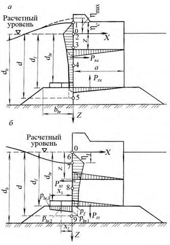
а при гребне волны; б при ложбине волны (с эпюрами взвешивающего волнового давления)
Рисунок 2 Эпюры давления стоячих волн на вертикальную стену со стороны открытой акватории
Рисунок 3 - Графики значений коэффициента kbr
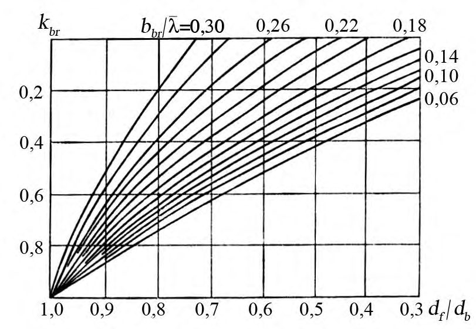
Построение эпюр волнового давления p должно производиться по результатам экспериментальных исследований и/или гидродинамических расчетов, а при их отсутствии на основе способа, приведенного в приложении Г.
Таблица 2
| α | < 45 ○ | 60 о | 75 о |
|---|---|---|---|
| k cs | 1 | 0,9 | 0,7 |
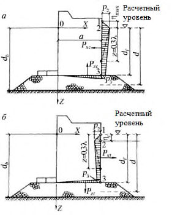
а - при гребне волны; б - при ложбине волны
Рисунок 4 Эпюры давления дифрагированных волн на вертикальную стену и ее подошву со стороны огражденной акватории
где коэффициент 0,4 0,25 sl k h = , при 30 h 1,0 sl k = ;
2 / k = - волновое число.
Максимальное значение касательного напряжения на поверхности дна τ w ,max, кПа, от воздействия волн следует определять по формуле
где fw= 0,237( a 0/ ks ) -0,52 - коэффициент трения; при a 0 ≤ 0,63 ks fw= 0,3; a
0 =Vb ,max T /2π;
T -период волны, с; ρ
- плотность воды, т/м³ .
, s s gr s k k k = + -суммарная гидравлическая шероховатость дна; k s , gr= α D 50 (α = 2-4, как правило, принимается α = 2,5) -шероховатость плоского (без русловых форм) дна, сложенного грунтом средней крупностью D 50, м;
( ) 1,1 1 exp 25 / s b b b k D D L = -- -шероховатость, обусловленная донными формами средней высотой Db , м, и средней длиной Lb , м.
Среднее за период T значение касательного напряжения на поверхности дна w , кПа, от воздействия волн должно определяться по формуле
Возможность размыва дна акватории у основания сооружений следует оценивать сравнением Vb ,max и/или w с допускаемыми значениями этих величин, при которых грунт остается устойчивым. При превышении этих значений должны разрабатываться мероприятия, обеспечивающие защиту от размыва и подмыва оснований сооружений (приложение В).
Рисунок 5 - Эпюры давления разбивающихся волн на вертикальную стену
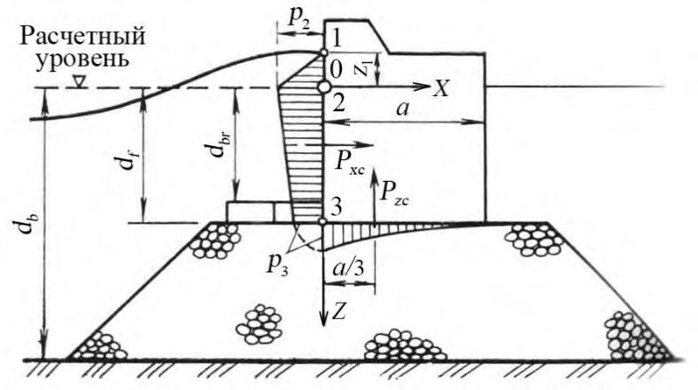
Вертикальную нагрузку Pzc , кН/м, от разбивающихся волн следует принимать равной площади эпюры взвешивающего волнового давления и определять по формуле
где μ - коэффициент, принимаемый равным 0,55 0,05 b f a d d = + -; при 3 b f a d d -
Максимальную придонную скорость воды Vf ,max, м/с, над поверхностью бермы перед вертикальной стеной при разбивающихся волнах следует определять по формуле
где hsur - высота прибойной волны, м, (приложение А); d cr - критическая глубина, м.
Горизонтальную нагрузку Pxc , кН/м, от прибойных волн необходимо принимать по эпюре бокового волнового давления, при этом значение p , кПа, для ординат z , м, допускается определять по формулам:
где sur - средняя длина прибойной волны, м. а с верхом постели на уровне дна; б с возвышающейся над дном постелью
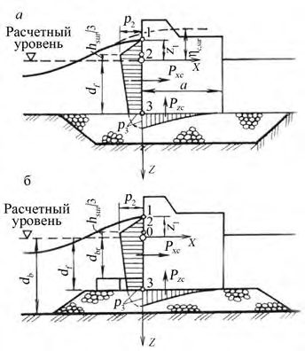
Рисунок 6 - Эпюры давления прибойных волн на вертикальную стену
Вертикальную нагрузку Pzc , кН/м, от прибойных волн следует принимать равной площади эпюры взвешивающего волнового давления и определять по формуле
Максимальная придонная скорость у основания вертикальной стены со стороны открытой акватории при действии прибойной волны Vb ,max, м/с, должна определяться по формуле
Нагрузки и воздействия волн на сооружения откосного профиля
Определение высоты наката волн на откос следует производить по результатам экспериментальных исследований и/или гидродинамических расчетов, а при их отсутствии методами, приведенными в приложении Д.
Деформируемость за время расчетного шторма пляжных откосов следует оценивать по данным натурных наблюдений (в том числе, на аналогах) и гидравлического моделирования в сочетании с апробированными расчетными методами.
Рисунок 7 - Схема к определению высоты hrun наката волн на откос
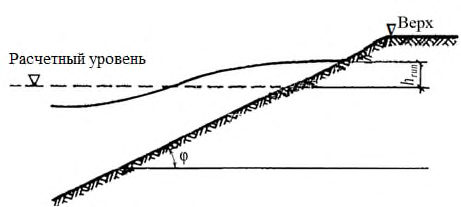
Нагрузки от волн на обтекаемые преграды и сквозные сооружения
Нагрузки от волн на обтекаемые преграды и сквозные сооружения должны определяться как сумма скоростного и инерционного компонентов, обусловленных соответственно локальными значениями скорости и ускорения волнового движения жидкости.
Динамический эффект от воздействия нерегулярных волн следует учитывать только в тех случаях, когда период собственных колебаний сооружения соизмерим со средним периодом набегающих волн (Е. 19 приложения Е).
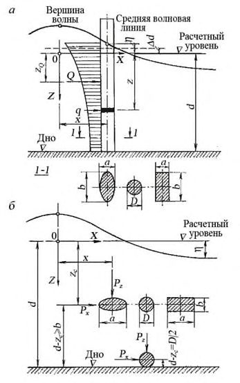
а
- вертикальные; б
- горизонтальные
Рисунок 8 - Схемы к определению волновых нагрузок на обтекаемые преграды
где коэффициент φ r принимается по таблице 3.
Таблица 3
| Положение расчетных | Значения коэффициента φ r при D /λ | Значения коэффициента φ r при D /λ | Значения коэффициента φ r при D /λ |
|---|---|---|---|
| точек | 0,2 | 0,3 | 0,4 |
| На контуре преграды | 0,98 | 0,87 | 0,77 |
| Впереди преграды | 0,67 | 0,75 | 0,75 |
Нагрузки от ветровых волн на берегоукрепительные сооружения
Таблица 4
| Ордината z , м, эпюры давления | Формула для определения ординаты z , м | Формула для определения давления p , кПа | Условия применимости формулы |
|---|---|---|---|
| 1 z (верх подводного волнолома) | ( ) 1 1 2 p g z z = - 1 2 p p = | 1 2 z z 2 1 z z | |
| 2 z (подошва волны) | 0,72 2 0,28 h z d d = | 1 2 4 0,015 0,23 d z p gh gz d d - = + - ( ) 2 2 4 p g z z = - | 0,04 i 0,04 i |
| 3 z (дно акватории перед волноломом) | 3 2 w p k p = ; 1,3 0,7 0,003 w k d = + 3 2 p p = | 0,04 i 0,04 i | |
| 4 z (поверхность воды за волноломом) | ( ) 4 1 5 1 rd z k z z z = - - + 0,88 0,31 rd h k d = - | ||
| 5 z (гребень волны перед волноломом) | 1,2 5 0,37 h z d d = |
Рисунок 9 - Эпюры волнового давления на подводный волнолом
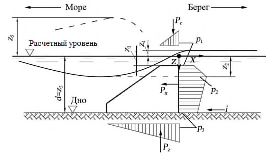
Для сооружения в виде подводного волнолома при определении Vb ,max
Максимальную придонную скорость воды Vb ,max, м/с, перед берегоукрепительным сооружением при разбивающихся и прибойных волнах надлежит определять соответственно по формулам (9) и (15).
по формуле 0,6 ; при при расположении сооружения в приурезовой зоне (рисунок 10, б ) по формулам:
при расположении сооружения на берегу за линией уреза в пределах наката волн (рисунок 10, в ) по формулам:
где c - превышение гребня волны над расчетным уровнем в створе волнозащитной стены, м; h br -высота разбивающихся волн в створе последнего обрушения перед сооружением, м; d - глубина воды в створе последнего обрушения волн, м; an - расстояние от створа последнего обрушения волн до линии уреза (приурезовая зона), м; a i - расстояние от створа последнего обрушения волн до сооружения, м; a l - расстояние от линии уреза воды до сооружения, м; a r - расстояние от линии уреза воды до условной границы наката на берег разбивающихся волн (при отсутствии сооружения), м, определяемое по формуле
hrun 1 % - высота наката волн на берег, м, определяемая по 5.21.
Примечания
1 Если ордината верха сооружения z 1≥-0,3 h , м, то значения волнового давления, определяемые по формулам (17), (18) и (21), необходимо умножать на коэффициент kzd , принимаемый по таблице 5.
2 В формулах (19) и (21) давление pu вычисляется по формуле (17).
Таблица 5
| Ордината верха сооружения z 1 , м | -0,3 h | 0,0 | +0,3 h | +0,65 h |
|---|---|---|---|---|
| Коэффициент k zd | 0,95 | 0,85 | 0,8 | 0,5 |
а - в створе последнего обрушения волн; б - в приурезовой зоне; в - за линией уреза
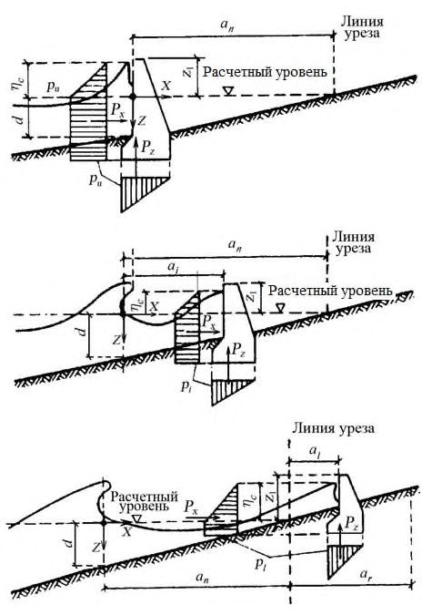
Рисунок 10 - Эпюры волнового давления на вертикальную волнозащитную стену при различном расположении сооружения
где zr - понижение поверхности воды от расчетного уровня перед вертикальной стеной при откате волны, м, принимаемое в зависимости от расстояния al от линии уреза воды до сооружения равным: при al ≥ 3 hbr zr= 0 и при al< 3 hbr zr= 0,25 hbr .
Рисунок 11 - Эпюры волнового давления на вертикальную волнозащитную стену при откате волны
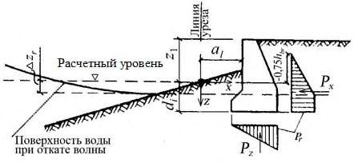
Рисунок 12 - Эпюра давления волн на криволинейный участок волнозащитной стены
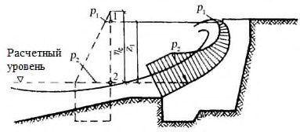
Таблица 6
| Грань буны | ctgα | Коэффициент k α при значении / l | Коэффициент k α при значении / l | Коэффициент k α при значении / l | Коэффициент k α при значении / l |
|---|---|---|---|---|---|
| 0,03 и менее | 0,05 | 0,1 | 0,2 и более | ||
| Внешняя ( int ) | - | 1 | 0,75 | 0,65 | 0,6 |
| Теневая ( ext) | 0 | 1 | 0,75 | 0,65 | 0,6 |
| Теневая ( ext) | 0,2 | 0,45 | 0,45 | 0,45 | 0,45 |
| Теневая ( ext) | 0,5 | 0,18 | 0,22 | 0,3 | 0,35 |
| Теневая ( ext) | 1 | 0 | 0 | 0 | 0 |
где k α - коэффициент, принимаемый по таблице 6, в зависимости от угла α подхода фронта волны к буне.
Рисунок 13 - Эпюры волнового давления на буну
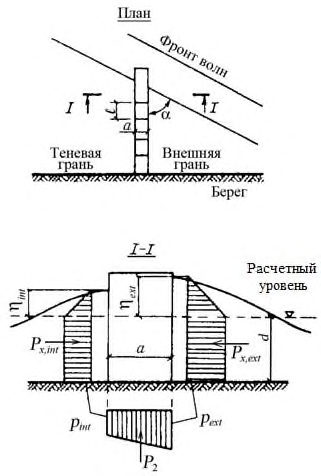
Воздействие судовых волн на крепления берегов каналов
где ds и lu - осадка и длина судна, м;
- скорость судна, м/с;
- δ - коэффициент общей полноты судна.
Примечание - При определении параметров волны, возникающей при движении водоизмещающих судов в водотоках (реках, каналах), следует учитывать, что скорость судна V , м/с, не должна превышать допускаемое значение Vadm , м/с, определенное нормативными актами для рассматриваемого водного пути. При отсутствии нормативных данных Vadm определяется по формуле
где ka - отношение подводной площади поперечного сечения судна к площади живого сечения канала A , м² ;
- b - ширина канала, м, по урезу воды.
При двухстороннем движении однотипных судов численное значение a k в формуле (29) следует увеличивать в 2 раза.
где β sl - коэффициент, принимаемый для откосов, облицованных сплошными плитами, равным 1,4, каменным мощением - 1,0 и каменной наброской - 0,8.
Рисунок 14 - Эпюра давления судовых волн на крепления берегов каналов при накате волны на откос
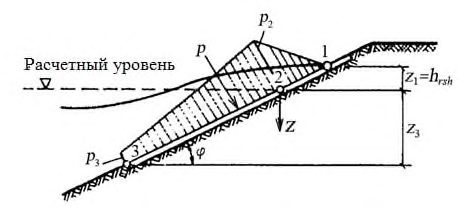
6Нагрузки от судов (плавучих объектов) на гидротехнические сооружения
- от ветра, течения и волн на плавучие объекты;
- от навала пришвартованного судна на причальное сооружение при действии ветра, течения и волн;
- от навала судна при его подходе к портовому причальному сооружению;
- от натяжения швартовов при действии на судно ветра, течения и волн.
Расчетные повторяемости внешних воздействий на акватории порта должны приниматься в зависимости от продолжительности стоянки судов и обусловленного ими типа швартовной системы (таблица 7).
Таблица 7
| Условия эксплуатации швартовно- | Особенности эксплуатационных условий швартовно-отбойных систем | Наименование внешних воздействий | Наименование внешних воздействий | Наименование внешних воздействий | |
|---|---|---|---|---|---|
| отбойных систем | Группа | Ветер | Течение | Волнение | |
| Длительно эксплуатируемые швартовно- отбойные системы стационарных и плавучих причалов морских портов | 1 | Проведение различных технологических операций по обслуживанию (снабжению) судна у погрузочных, топливных причалов и т.п. Стоянка допускается только в благоприятных погодных условиях. При прогнозе ухудшения погоды судно отходит от причала | Исходя из технических возможностей конкретного судна и причала, но не менее одного раза в год | Исходя из технических возможностей конкретного судна и причала, но не менее одного раза в год | Исходя из технических возможностей конкретного судна и причала, но не менее одного раза в год |
| Длительно эксплуатируемые швартовно- отбойные системы стационарных и плавучих причалов морских портов | 2 | Стоянка судна в штормовых условиях у специализированных (погрузочных, топливных и т.п.) и стояночных причалов | Один раз в 50 лет* | Один раз в 50 лет* | Один раз в год |
| Длительно эксплуатируемые швартовно- отбойные системы стационарных и плавучих причалов морских портов | 3 | Разовая непрерывная стоянка судна у причала до трех месяцев без возможности отвода от причала | Один раз в 10 лет | Один раз в 10 лет | Один раз в 10 лет |
| 4 | Многократные стоянки судов у причалов, судостроительных и судоремонтных заводов и т.п. до трех месяцев или непрерывная стоянка у причала до 1 - 2 лет без возможности отвода от причала | Один раз в 50 лет* | Один раз в 50 лет* | Один раз в 50 лет* | |
|---|---|---|---|---|---|
| 5 | Непрерывная стоянка плавучего объекта более двух лет без возможности отвода с места стоянки (корабли-музеи, плавучие теплоэлектростанции, в том числе атомные, плавучие доки и т.п.) | Один раз в 100 лет* | Один раз в 100 лет* | Один раз в 100 лет* | |
| 6 | Проведение морских операций, ограниченных по погодным условиям: длительностью до трех суток; длительностью более трех суток при обеспечении возможности их прерывания и отвода судов и плавучих объектов в защищенное место | Исходя из технических возможностей судов, плавучих объектов и оборудования, используемых при проведении морской операции, но не менее одного раза в год | Исходя из технических возможностей судов, плавучих объектов и оборудования, используемых при проведении морской операции, но не менее одного раза в год | Исходя из технических возможностей судов, плавучих объектов и оборудования, используемых при проведении морской операции, но не менее одного раза в год | |
| Кратковременно эксплуатируемые швартовно- отбойные системы при проведении морских операций | 7 | Проведение морских операций, неограниченных по погодным условиям, при длительности операции до одного месяца без возможности прерывания операции и отвода судов в защищенное место | Один раз в 5 - 10 лет** | Один раз в 5 - 10 лет** | Один раз в 5 - 10 лет** |
| Кратковременно эксплуатируемые швартовно- отбойные системы при проведении морских операций | 8 | Проведение морских операций, неограниченных по погодным условиям при длительности операций свыше одного месяца | Один раз в 50 лет* | Один раз в 50 лет* | Один раз в 50 лет* |
* При соответствующем обосновании расчетная повторяемость внешних воздействий принимается в соответствии с расчетным периодом повторяемости для причального сооружения заданного класса.
- ** Меньшее значение повторяемости внешних воздействий (один раз в пять лет) принимается при проведении морской операции на открытых акваториях на удалении от других объектов, а большее (один раз в 10 лет) - при проведении морской операции поблизости от других сооружений.
Примечание - На морях с приливами и отливами определение усилий в элементах раскрепления следует производить при самом высоком и самом низком уровнях воды.
Нагрузки от ветра, течения и волн на плавучие объекты
для плавучих доков
где An и Al - соответственно боковая и лобовая надводные площади парусности (силуэтов) плавучих объектов, м² ;
- V n и Vl - соответственно поперечная и продольная составляющие скорости ветра м/с, в порывах с осреднением 1 мин, повторяемость которых принимается в соответствии с таблицей 7;
- ξ - коэффициент, зависящий от наибольшего горизонтального размера, поперечного или продольного силуэтов надводной части плавучего объекта; принимается по таблице 8; при длительной стоянке судов у причала (группы 3 - 5 таблицы 7) коэффициент ξ=1;
Примечания
- 1 При определении ветрового воздействия на пришвартованное судно (плавучий объект) с учетом пульсации ветра необходимо рассматривать такое сочетание скорости и направлений ветра, отклоняющихся до ±30° от оси судна или нормали к ней, которое обусловливает наибольшее значение нагрузки w Q или Nw .
- 2 Площади парусности следует определять с учетом площадей экранирующих преград, расположенных с наветренной стороны (приложение И).
- 3 Значение скорости ветра с осреднением 1 мин определяется по ГОСТ Р 57148-2016 (А.7.3).
Таблица 8
| Наибольший горизонтальный размер силуэта плавучего объекта, м | До 25 | 50 | 100 | 200 и более |
|---|---|---|---|---|
| Коэффициент ξ | 1 | 0,8 | 0,65 | 0,5 |
где Al и An - соответственно боковая и лобовая подводные площади парусности плавучих объектов, м² ;
- C l , Cn - обобщающие коэффициенты продольной и поперечной силы воздействия течения, определяемые с учетом соотношения осадки плавучего объекта и глубины воды (приложение К);
- Vn и Vl - поперечная и продольная составляющие скорости течения, м/с, принимаемые в соответствии с таблицей 7.
где æ - коэффициент, зависящий от осадки ds , м, плавучего объекта; принимается по графику на рисунке 15;
- ς - коэффициент, принимаемый по таблице 9, в которой al - наибольший горизонтальный размер продольного силуэта подводной части плавучего объекта, м;
- h - высота волны обеспеченностью 5 % в системе; An и Al - обозначения см. в 6.4.
Таблица 9
| a l / λ | 0,5 и менее | 1 | 2 | 3 | 4 и более |
|---|---|---|---|---|---|
| Коэффициент ς | 1 | 0,73 | 0,5 | 0,42 | 0,4 |
Рисунок 15 - График значений коэффициента æ
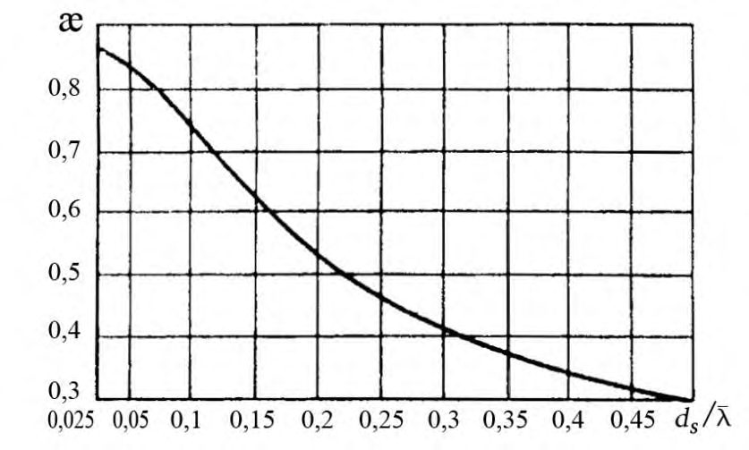
Нагрузки от навала пришвартованного судна на сооружение
где ld - общая длина участков контакта судна с сооружением, м; tot Q - поперечная сила от суммарного воздействия ветра, течения и волн, кН, определяемая согласно 6.4 - 6.6: tot w c Q Q Q = + - в случае, если высота волн обеспеченностью 5% не превышает допускаемые при стоянке значения по таблице 10; tot w c e Q Q Q Q = + + в случае, если высота волн обеспеченностью 5% превышает допускаемые при стоянке значения по таблице 10.
Примечание - Для причального фронта, образованного несколькими опорами или палами, распределение нагрузки от пришвартованного судна следует принимать только на те из них, которые располагаются в пределах прямолинейной части борта судна.
Для уточнения волновой составляющей нагрузки на причальные сооружения от пришвартованного судна следует использовать методику, учитывающую динамический характер волнового воздействия (приложение Л).
Таблица 10
| Угол подхода фронта волн к диаметральной плоскости судна α | Высота волн h 5% , м, допускаемая при стоянке судна с расчетным водоизмещением W , тыс. т | Высота волн h 5% , м, допускаемая при стоянке судна с расчетным водоизмещением W , тыс. т | Высота волн h 5% , м, допускаемая при стоянке судна с расчетным водоизмещением W , тыс. т | Высота волн h 5% , м, допускаемая при стоянке судна с расчетным водоизмещением W , тыс. т | Высота волн h 5% , м, допускаемая при стоянке судна с расчетным водоизмещением W , тыс. т | Высота волн h 5% , м, допускаемая при стоянке судна с расчетным водоизмещением W , тыс. т | Высота волн h 5% , м, допускаемая при стоянке судна с расчетным водоизмещением W , тыс. т |
|---|---|---|---|---|---|---|---|
| Угол подхода фронта волн к диаметральной плоскости судна α | до 2 | 5 | 10 | 20 | 40 | 100 | 200 и более |
| До 45 ○ | 0,6 | 0,7 | 0,9 | 1,1 | 1,2 | 1,5 | 1,8 |
| 90 ○ | 0,9 | 1,2 | 1,5 | 1,8 | 2 | 2,5 | 3,2 |
Нагрузки от навала судна при подходе к сооружению
где ψ - коэффициент, учитывающий условия швартовки и конструкцию причальных сооружений;
W - расчетное водоизмещение (масса) судна, т;
Vn - нормальная (к поверхности сооружения) составляющая скорости подхода судна, м/с.
Допускаемые значения нормальной составляющей скорости подхода Vn и коэффициента ψ следует назначать с применением данных приложения М.
Суммарная энергия деформации Etot , кДж, должна включать энергию деформации отбойных устройств Ec , кДж, и энергию деформации причального сооружения Ei , кДж; при Ec ≥ 10 Ei величина Ei не учитывается.
Энергию деформации причального сооружения Ei , кДж, следует определять по формуле
где ki - коэффициент жесткости причального сооружения в горизонтальном поперечном направлении, кН/м.
Продольная сила Fl , кН, от навала судна при подходе к сооружению должна определяться по формуле
где μ - коэффициент трения, принимаемый в зависимости от материала лицевой поверхности отбойного устройства: при поверхности из бетона или резины μ=0,5; при деревянной поверхности μ=0,4; при полиэтиленовых брусьях μ=0,1-0,15.
где Etot - энергия навала, кДж, принимаемая по графикам рисунка 16 при заданном значении допускаемой силы Fn на причальное сооружение (или на борт судна);
W и ψ - обозначения те же, что и в 6.8.
Следует учитывать, что ограничение скорости подхода к сооружению может быть обусловлено размывающим воздействием на донные отложения и/или крепление дна акватории вблизи сооружения, оказываемым потоком, возникающим за счет работы движителей судна. а - от энергии tot E ; б - от нагрузки q F
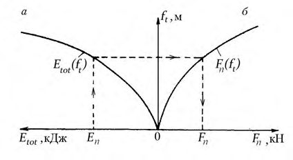
Рисунок 16 Схема использования зависимостей деформаций отбойного устройства (и причального сооружения) f t от энергии Etot и от нагрузки Fn
Нагрузки на сооружения от натяжения швартовов
Воспринимаемую одной тумбой (или рымом) силу S , кН, на уровне козырька (рисунок 17) от всех судов, швартовы которых заведены за тумбу, а также ее поперечную Sn , кН, продольную Sl , кН, и вертикальную Sz , кН, проекции следует определять по формулам:
где n - число работающих тумб, принимаемое по таблице 11; α, β - углы наклона швартова, град, принимаемые по таблице 12.
Рисунок 17 Схема распределения усилия на тумбу от натяжения швартовов
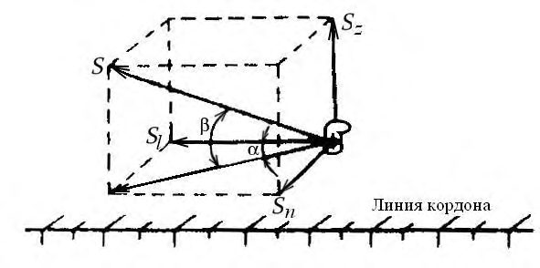
Таблица 11
| Наибольшая длина судна l max , м | 50 и менее | 150 | 250 | 300 и более |
|---|---|---|---|---|
| Наибольшее расстояние между тумбами l s , м | 20 | 25 | 30 | 30 |
| Число работающих тумб n | 2 | 4 | 6 | 8 |
Таблица 12
| Положения тумб | Угол наклона швартова | Угол наклона швартова | Угол наклона швартова | |
|---|---|---|---|---|
| Тип судна | на причальном | α | β | β |
| сооружении | судно в грузу | судно порожнее | ||
| Морские | На кордоне В тылу | 30 ○ 40 ○ | 20 ○ 10 ○ | 40 ○ 20 ○ |
| Речные пассажирские и грузопассажирские | На кордоне | 45 ○ | 0 ○ | 0 ○ |
| Речные грузовые | То же | 30 ○ | 0 ○ | 0 ○ |
Примечание - При расположении швартовных тумб на отдельно стоящих фундаментах значение угла β следует принимать равным 30°.
Нормативные значения силы натяжения швартова S , кН, для судов речного флота должны приниматься по таблице 13.
Таблица 13
| Нормативная сила натяжения швартова S , кН, для судов | Нормативная сила натяжения швартова S , кН, для судов | |
|---|---|---|
| Расчетное водоизмещение судна W , тыс. т | пассажирских, грузопассажирских, технического флота со сплошной надстройкой | грузовых и технического флота без сплошной надстройки |
| 0,1 и менее | 50 | 30 |
| 0,11 - 0,5 | 100 | 50 |
| 0,51 - 1 | 145 | 100 |
| 1,1 - 2 | 195 | 125 |
| 2,1 - 3 | 245 | 145 |
| 3,1 - 5 | - | 195 |
| 5,1 - 10 | - | 245 |
| Более 10 | - | 295 |
Силу, передаваемую на каждую концевую тумбу носовыми или кормовыми продольными швартовами, для морских судов с расчетным водоизмещением более 50 тыс. т следует принимать равной продольной составляющей суммарной силы Ntot , кН, от действия ветра и течения на пришвартованное судно, определенной согласно 6.4 - 6.5.
Примечание - Более точное определение усилий в швартовых с учетом конкретной схемы швартовки судна выполняется по формулам приложения Н.
- 0,8 tot Q , кН - для носовых и кормовых продольных и прижимных канатов;
- 0,6 tot Q , кН - для шпрингов.
Если каждая группа швартовов заводится на несколько палов, то распределение усилий между ними принимается равномерным. Значения углов α и β (рисунок 17) и число работающих тумб следует устанавливать по расположению швартовных палов.
Примечания
- 1 Волновую составляющую нагрузки на причал от натяжения швартовов следует учитывать на основе апробированных на практике динамических методов расчетов качки пришвартованного судна на волнении или на основе модельных испытаний. Для предварительных оценок применяется методика, приведенная в приложении Л.
- 2 Для сплошных причалов при рассмотрении случаев, когда ветер направлен от причала в сторону акватории, волновая составляющая нагрузки на причал от натяжения швартовов не учитывается
7Ледовые нагрузки на гидротехнические сооружения
Основные положения
- нагрузки на сооружения от полей ровного льда, включая сценарии подхода дрейфующего поля льда к сооружению (или ледохода) и подвижки поля ровного льда при вмерзании в него сооружения;
- локальное давление ледовых образований;
- нагрузки на сооружения от сплошного ледяного покрова при его температурном расширении;
- нагрузки от примёрзшего к сооружению ледяного покрова при изменении уровня воды;
- нагрузки на сооружения от заторных и зажорных масс льда;
- нагрузки от движущегося тороса;
- нагрузки от движущегося айсберга.
- толщина льда;
- прочностные характеристики льда;
- характеристики геометрических размеров и форм рельефа ледяного покрова;
- перепады температур, необходимые при расчёте нагрузки от температурного расширения;
- максимальная и минимальная скорости подхода льда к сооружению;
- температура воздуха, необходимая для расчёта прочности льда;
- скорость ветра и пр.
где N - число слоёв одинаковой толщины, на которое разбивается (по толщине) рассматриваемое ледяное поле, при этом 3 N ; i C - прочность льда на одноосное сжатие, МПа, в i -м слое при температуре i t ; i - доверительная граница случайной погрешности определений i C , МПа, определяемая методами математической статистики; b C и b -прочность льда на одноосное сжатие, МПа, в нижнем слое рассматриваемого ледяного поля при температуре b t и доверительная граница случайной погрешности определений b C , МПа, определяемые так же, как i C и i ; b t - температура льда на границе лёд-вода (температура замерзания), равная для пресной воды 0°С, а для солёной воды определяемая по формуле 0,057 b w t s = - , где w s - солёность воды, ‰.
Распределение температуры по толщине льда и определение ее значения в i -м слое принимается по натурным данным или, при их отсутствии, на основе решения задачи теплопроводности при стационарном режиме с учетом расчетной толщины слоя снега на поверхности льда.
Для решения задачи теплопроводности температуру наружного воздуха на границе лёдатмосфера (параметр, определяющий прочностные характеристики льда) следует принимать по данным метеорологических наблюдений на ближайшей метеостанции.
В зависимости от класса сооружений в качестве температуры наружного воздуха принимается:
- для толщины льда менее 1,5 м - обеспеченное значение средней температуры воздуха за декаду, предшествующую ледовому воздействию (для гидротехнических сооружений I и II классов обеспеченность среднедекадной температуры составляет 0,1 %, для гидротехнических сооружений III и IV классов - 1,0 %);
- для толщины льда более 1,5 м - обеспеченное значение средней температуры воздуха за месяц, предшествующий ледовому воздействию (для гидротехнических сооружений I и II классов обеспеченность среднемесячной температуры составляет 0,1 %, для гидротехнических сооружений III и IV классов - 1,0 %).
При отсутствии опытных данных значение i C принимается по таблицам 14 и 15 для пресного и солёного льда соответственно. При этом при солёности льда от 1,7 ‰ и менее лёд считается условно пресным.
Таблица 14
| Тип кристаллической структуры | Доверительная | Температура льда в i -м слое ледяного поля i t , °C | Температура льда в i -м слое ледяного поля i t , °C | Температура льда в i -м слое ледяного поля i t , °C | Температура льда в i -м слое ледяного поля i t , °C |
|---|---|---|---|---|---|
| пресноводного льда | вероятность, α | 0 | -3 | -15 | -30 |
| Значения i i C , МПа | Значения i i C , МПа | Значения i i C , МПа | Значения i i C , МПа | ||
| Зернистый (снежный) | 1,2 | 3,1 | 4,8 | 5,8 | |
| Зернистый (снежный) | 0,95 | ±0,1 | ±0,2 | ±0,3 | ±0,4 |
| Зернистый (снежный) | 0,99 | ±0,1 | ±0,3 | ±0,4 | ±0,6 |
| Призматический (столбчатый) | 1,5 | 3,5 | 5,3 | 6,5 | |
| Призматический (столбчатый) | 0,95 | ±0,2 | ±0,3 | ±0,4 | ±0,5 |
| Призматический (столбчатый) | 0,99 | ±0,3 | ±0,4 | ±0,6 | ±0,7 |
| Волокнистый (шестовато-игольчатый) | 0,8 | 2,0 | 3,2 | 3,8 | |
| Волокнистый (шестовато-игольчатый) | 0,95 | ±0,1 | ±0,2 | ±0,3 | ±0,4 |
| Волокнистый (шестовато-игольчатый) | 0,99 | ±0,1 | ±0,3 | ±0,4 | ±0,6 |
Таблица 15
| Тип кристаллической структуры | Соленость | Доверительная вероятность, α | Температура льда в i -м слое ледяного поля i t , °C | Температура льда в i -м слое ледяного поля i t , °C | Температура льда в i -м слое ледяного поля i t , °C |
|---|---|---|---|---|---|
| льда, ‰ | -3 | -15 | -30 | ||
| морского льда | Значения i i C , МПа | Значения i i C , МПа | Значения i i C , МПа | ||
| Зернистый | 2,70 | 4,70 | 5,70 | ||
| Зернистый | 2 | 0,95 | ±0,2 | ±0,5 | ±0,5 |
| Зернистый | 0,99 | ±0,3 | ±0,7 | ±0,7 | |
| Зернистый | 1,60 | 4,25 | 4,90 | ||
| Зернистый | 3 | 0,95 | ±0,2 | ±0,5 | ±0,5 |
| Зернистый | 0,99 | ±0,3 | ±0,7 | ±0,7 | |
| Зернистый | 1,30 | 3,90 | 4,50 | ||
| Зернистый | 4 | 0,95 | ±0,2 | ±0,5 | ±0,5 |
| Зернистый | 0,99 | ±0,3 | ±0,7 | ±0,7 | |
| Зернистый | 1,15 | 3,40 | 4,10 | ||
| Зернистый | 5 | 0,95 | ±0,2 | ±0,5 | ±0,5 |
| Зернистый | 0,99 | ±0,3 | ±0,7 | ±0,7 | |
| Зернистый | 1,05 | 3,40 | 4,10 | ||
| Зернистый | 6 | 0,95 | ±0,2 | ±0,5 | ±0,5 |
| Зернистый | 0,99 | ±0,3 | ±0,7 | ±0,7 | |
| Волокнистый | 1,45 | 3,10 | 3,70 | ||
| Волокнистый | 2 | ±0,2 | ±0,5 | ±0,5 | |
| Волокнистый | ±0,3 | ±0,7 | ±0,7 | ||
| Волокнистый | 0,80 | 2,80 | 3,25 | ||
| Волокнистый | 3 | 0,95 | ±0,1 | ±0,5 | ±0,5 |
| Волокнистый | 0,60 | 2,50 | 3,10 | ||
| Волокнистый | 4 | 0,95 | ±0,1 | ±0,5 | ±0,5 |
СП 38.13330.2018
| Тип кристаллической структуры морского льда | Соленость льда, ‰ | Доверительная вероятность, α | Температура льда в i -м слое ледяного поля i t , °C | Температура льда в i -м слое ледяного поля i t , °C | Температура льда в i -м слое ледяного поля i t , °C |
|---|---|---|---|---|---|
| Тип кристаллической структуры морского льда | Соленость льда, ‰ | Доверительная вероятность, α | -3 | -15 | -30 |
| Тип кристаллической структуры морского льда | Соленость льда, ‰ | Доверительная вероятность, α | Значения i i C , МПа | Значения i i C , МПа | Значения i i C , МПа |
| Тип кристаллической структуры морского льда | 0,99 | ±0,1 | ±0,7 | ±0,7 | |
| Тип кристаллической структуры морского льда | 0,45 | 2,30 | 2,85 | ||
| Тип кристаллической структуры морского льда | 5 | 0,95 | ±0,1 | ±0,5 | ±0,5 |
| Тип кристаллической структуры морского льда | 0,99 | ±0,1 | ±0,7 | ±0,7 | |
| Тип кристаллической структуры морского льда | 0,40 | 2,20 | 2,80 | ||
| Тип кристаллической структуры морского льда | 6 | 0,95 | ±0,1 | ±0,5 | ±0,5 |
| Тип кристаллической структуры морского льда | 0,99 | ±0,1 | ±0,7 | ±0,7 |
Значение доверительной вероятности α величин c R и f R при расчётах ледовых нагрузок принимается равным 0,99 для сооружений I класса и 0,95 - для сооружений II и III классов.
- 0,45 - для рек бассейна Среднего и Верхнего Амура и юга Забайкалья;
- 0,5 - для рек бассейна Нижнего Амура, Средней Лены, Енисея до Енисейска, Оби до Октябрьского и севера Европейской части Российской Федерации;
- 0,64 - для рек бассейна Верхнего Днепра, Верхней Волги, Камы и Тобола, низовья Дона, Волги, Урала и Оби, междуречья Оби и Енисея, Верхней Лены, Алдана и крайнего северо-востока Российской Федерации;
- 0,83 - для нижних течений Енисея и Лены и рек их междуречья, рек бассейна Алтая, а также для рек центра, северо-запада и юго-востока Европейской части Российской Федерации.
- ледяной покров открытых озёр, водохранилищ и крупных рек состоит из зернистого и призматического льдов;
- ледяной покров морей и устьевых участков рек, впадающих в моря, состоит из зернистого и волокнистого льдов.
Толщина слоя зернистого льда, располагающегося в верхней части ледяного покрова, относится к толщине слоя призматического или волокнистого льда как 1:3.
Нагрузки на сооружения от полей ровного льда
на протяжённое сооружение (рисунок 19) , c w F , MH, по формуле
где V - скорость движения ледяного поля, м/с;
- d h - обеспеченная толщина ровного льда, м. Назначается путём статистической обработки материалов натурных наблюдений для периода времени с наибольшими ледовыми воздействиями в зависимости от класса гидротехнического сооружения по таблице 16;
- m - коэффициент формы воспринимающей нагрузку передней грани опоры в плане, принимаемый по таблице 17;
- A - максимальная площадь ледяного поля (или суммарная площадь нескольких ледяных полей, оказывающих давление друг на друга), м² , которая может воздействовать на рассчитываемый элемент сооружения, определяемая по натурным наблюдениям или принимаемая в зависимости от поперечных размеров сооружения как 2 3 A l = (где l - пролёт водопропускного сооружения) или 2 3 A b = (где b - поперечный размер сооружения);
- b k - коэффициент, принимаемый по таблице 18;
V k - коэффициент, принимаемый по таблице 19;
- γ - половина угла заострения передней грани опоры в плане на уровне действия льда, град; для опоры в виде многогранника или полуциркульного очертания необходимо принимать γ 70 = ; c R - обозначение см. в 7.4; ρ - плотность воды, кг/м³ .
Таблица 16
| Класс гидротехнического сооружения | I, II | III, IV |
|---|---|---|
| Ежегодная вероятность превышения | ||
| (обеспеченность) толщины ровного льда P ,% | 0,1 | 1,0 |
Таблица 17
| Коэффициент формы передней грани опоры в плане | Для опоры с передней гранью в виде | Для опоры с передней гранью в виде | Для опоры с передней гранью в виде | Для опоры с передней гранью в виде | Для опоры с передней гранью в виде | Для опоры с передней гранью в виде | Для опоры с передней гранью в виде |
|---|---|---|---|---|---|---|---|
| Коэффициент формы передней грани опоры в плане | треугольника с углом заострения в плане 2γ | треугольника с углом заострения в плане 2γ | треугольника с углом заострения в плане 2γ | треугольника с углом заострения в плане 2γ | треугольника с углом заострения в плане 2γ | многогранника или полуциркульного очертания | прямоугольника |
| Коэффициент формы передней грани опоры в плане | 45 ○ | 60 ○ | 75 ○ | 90 ○ | 120 ○ | многогранника или полуциркульного очертания | прямоугольника |
| m | 0,41 | 0,47 | 0,52 | 0,58 | 0,71 | 0,83 | 1 |
Примечание - В случае подвижки смёрзшегося с опорой ледяного поля для опоры с передней гранью в виде треугольника и прямоугольника принимается 1 m = , для опор с передней гранью в виде многогранника или полуциркульного очертания 1, 26 m = .
Таблица 18
| Значение / d b h | 0,3 и менее | 1 | 3 | 10 | 15 | 25 | 50 и более |
|---|---|---|---|---|---|---|---|
| Коэффициент b k | 5,5 | 3,3 | 2,2 | 1,3 | 1,1 | 1,0 | 0,5 |
Таблица 19
| Значение ε b , с -1 | 10 -7 и менее | 5∙10 -5 | 10 -4 - 5∙10 -4 | 10 -3 | 5∙10 -3 | 10 -2 и более |
|---|---|---|---|---|---|---|
| Коэффициент V k | 0,1 | 0,9 | 1,0 | 0,8 | 0,5 | 0,3 |
ε b - эффективная скорость деформации льда в зоне его взаимодействия с опорой, с -1 , определяемая по формуле ε / ( ) b l V k b = , где l k - коэффициент, принимаемый при / d b h (или / s d b h ) 15 равным 4, а при / d b h (или / s d b h ) 25 равным 2; при 15 / d b h (или / s d b h ) 25 коэффициент l k определяется линейной интерполяцией между значениями 4 и 2.
При отсутствии материалов натурных наблюдений за толщиной ровного льда в качестве исходных данных принимаются значения толщины ровного льда соответствующей вероятности превышения в соответствии с таблицей 16, полученные расчётом по гидрометеорологическим условиям местности.
Для определения скорости дрейфа льда, при которой происходит разрушение льда у сооружения, должны быть построены графики зависимости ледовой нагрузки Fc при остановке ледового поля и Fb при прорезании ледового поля от скорости дрейфа льда V. Точка пересечения графиков - искомое значение скорости дрейфа.
Примечания
- 1 Под отдельно стоящим сооружением следует понимать сооружение, обтекаемое льдом, способное воспринимать действующую ледовую нагрузку и прорезать движущееся на него ледяное поле.
- 2 Под протяжённым сооружением следует понимать сооружение, препятствующее проходу ледяных полей через створ сооружения. Под это понятие попадают отдельные участки русловых плотин, затворы водосбросных сооружений, протяжённые стены, если они упираются в берега или соединены с другими сооружениями, и пр.
Рисунок 18 - Схема приложения нагрузки от движущегося ледяного поля на отдельно стоящую вертикальную опору
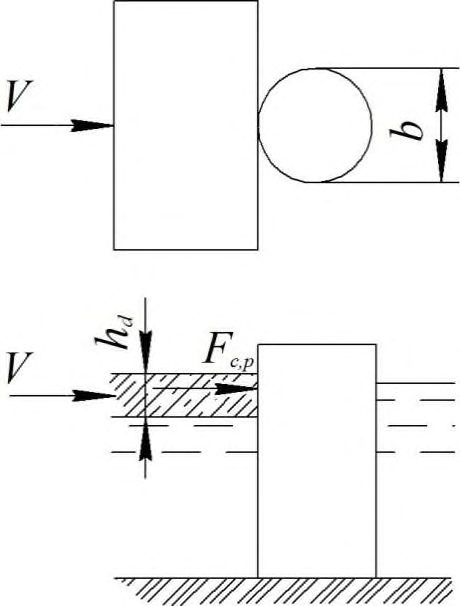
Рисунок 19 -Схема приложения нагрузки от движущегося ледяного поля на секцию сооружения
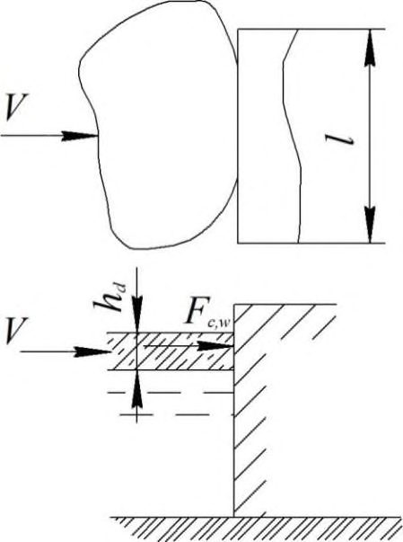
Нагрузка , c p F , определённая по формуле (50), должна быть не более нагрузки , b p F , MH, определяемой по формуле
а нагрузка , c w F , определённая по формуле (51), должна быть не более нагрузки , b w F , MH, определяемой по формуле
где k - коэффициент, принимаемый по таблице 20; s b - протяжённость контакта ледяного покрова с сооружением, м.
Нагрузку от воздействия ледяного поля на опору с передней гранью в виде прямоугольника следует определять по формуле (52).
Таблица 20
| Значение / s d b h | 0,3 и менее | 1 | 3 | 10 | 20 | 25 и более |
|---|---|---|---|---|---|---|
| Коэффициент k | 1 | 0,9 | 0,8 | 0,6 | 0,5 | 0,4 |
- а) горизонтальную составляющую нагрузки , h p F , MH,
- б) вертикальную составляющую нагрузки , v p F , MH,
где ,1 h k , ,2 h k - коэффициенты, принимаемые по таблице 21;
,3 h k , ,4 h k , ,1 v k , ,2 v k - коэффициенты, принимаемые по таблице 22;
, v f k - коэффициент, принимаемый по таблице 23; ρ - плотность воды, кг/м³ ; g - ускорение свободного падения, равное 9,81 м/с 2 ; d - диаметр конуса по ватерлинии, м; t d - верхний диаметр конуса, м; f R и d h - обозначения см. в 7.4 и 7.8.
Таблица 21
| Значение | 6 2 10 ρ f d gd R h - | 0,1 | 0,5 | 1 | 5 | 10 25 | 50 | 100 |
|---|---|---|---|---|---|---|---|---|
| Коэффициенты: | ||||||||
| ,1 h k | 1,6 | 1,6 | 1,7 | 1,9 | 2,1 | 2,5 | 2,9 | 3,5 |
| ,2 h k | 0,31 | 0,24 | 0,21 | 0,11 | 0,08 | 0,05 | 0,02 | 0,02 |
Рисунок 20 - Схема приложения нагрузок от движущегося ледяного поля на отдельно стоящую коническую опору
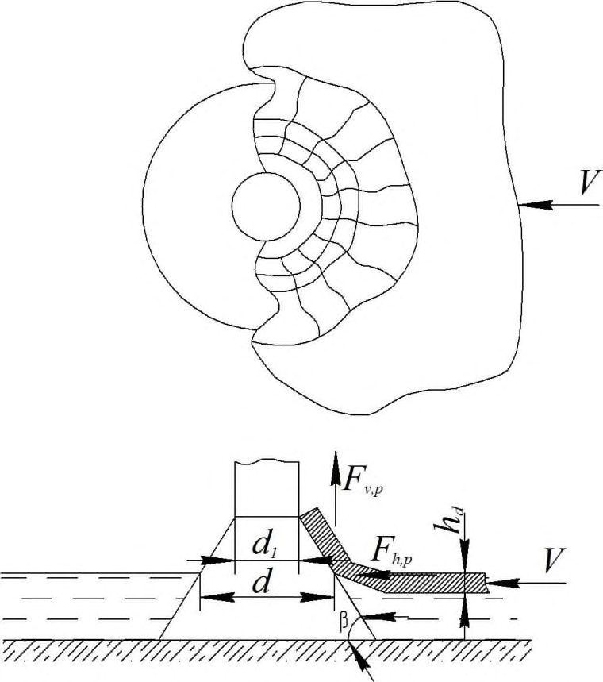
Таблица 22
| Значение β | 20 ○ | 30 ○ | 40 ○ | 50 ○ | 60 ○ | 70 ○ |
|---|---|---|---|---|---|---|
| Коэффициенты: | ||||||
| ,3 h k | 0,25 | 0,27 | 0,31 | 0,36 | 0,46 | 0,67 |
| ,4 h k | 0,7 | 0,9 | 1,3 | 1,8 | 2,6 | 5,3 |
| ,1 v k | 2,2 | 1,6 | 1,1 | 0,8 | 0,5 | 0,3 |
| ,2 v k | 0,041 | 0,042 | 0,039 | 0,034 | 0,026 | 0,017 |
β - угол наклона образующей конуса (передней грани сооружения откосного профиля) к горизонту.
Примечание - Значения настоящей таблицы соответствуют коэффициенту трения между льдом и сооружением, равному 0,15.
Таблица 23
| Значение 3 2 10 ρ / f V R - | Значение 3 2 10 ρ / f V R - | Значение 3 2 10 ρ / f V R - | Значение 3 2 10 ρ / f V R - | Значение 3 2 10 ρ / f V R - | |
|---|---|---|---|---|---|
| Значение β | 0,08 и менее | 0,8 | 1,6 | 3,2 | 5,4 |
| Коэффициент , v f k | Коэффициент , v f k | Коэффициент , v f k | Коэффициент , v f k | Коэффициент , v f k | |
| 40 ○ - 50 ○ | 1 | 2,0 | 2,7 | 3,7 | 4,7 |
| 60 ○ | 1 | 2,0 | 2,6 | 3,5 | 3,6 |
| 70 ○ | 1 | 1,9 | 2,5 | 2,6 | 2,7 |
На секцию откосного профиля или отдельно стоящую опору прямоугольного сечения с наклонной передней гранью (рисунок 21) нагрузку от воздействия движущегося ледяного поля следует определять по формулам:
- а) горизонтальную составляющую нагрузки h F , MH,
- б) вертикальную составляющую нагрузки v F , MH
где β k - коэффициент, принимаемый по таблице 24;
Δ k - коэффициент, принимаемый по таблице 25; h m - коэффициент, принимаемый по таблице 26;
1 A , 2 A , 3 A - коэффициенты, принимаемые по таблице 27; v m - коэффициент, принимаемый по таблице 28; f - коэффициент трения; b - обозначения см. в 7.8.
Рисунок 21 - Схема приложения нагрузок от движущегося ледяного поля на сооружение откосного профиля
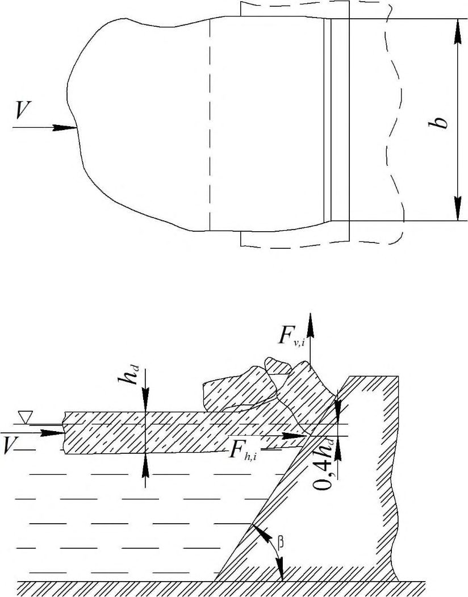
Таблица 24
| β | 30 ○ | 40 ○ | 50 ○ | 60 ○ | 70 ○ |
|---|---|---|---|---|---|
| Коэффициент β k | 1,0 | 1,5 | 2,0 | 2,5 | 2,5 |
Таблица 25
| d h , м | 0,5 | 1,0 | 2,0 | 3,0 | 4,0 |
|---|---|---|---|---|---|
| Коэффициент Δ k | 0,039 | 0,048 | 0,062 | 0,073 | 0,083 |
Таблица 26
| d h , м | Значения h m , МН/м, при β | Значения h m , МН/м, при β | Значения h m , МН/м, при β | Значения h m , МН/м, при β | Значения h m , МН/м, при β |
|---|---|---|---|---|---|
| d h , м | 30° | 40° | 50° | 60° | 70° |
| 0,5 | 0,044 | 0,058 | 0,143 | 0,316 | 0,746 |
| 1,0 | 0,089 | 0,178 | 0,319 | 0,642 | 1,463 |
| 2,0 | 0,238 | 0,484 | 0,746 | 1,394 | 3,076 |
| 3,0 | 0,499 | 0,847 | 1,213 | 2,157 | 4,635 |
| 4,0 | 0,622 | 1,303 | 1,790 | 3,084 | 6,510 |
Таблица 27
| β | 30 ○ | 40 ○ | 50 ○ | 60 ○ | 70 ○ |
|---|---|---|---|---|---|
| 1 A | 1,92 | 2,01 | 2,09 | 2,17 | 2,22 |
| 2 A | 1,19 | 2,68 | 4,70 | 12,20 | 60,0 |
| 3 A | 2,07 | 1,35 | 0,75 | 0,41 | 0,24 |
Таблица 28
| d h , м | Значения v m , МН/м, при β | Значения v m , МН/м, при β | Значения v m , МН/м, при β | Значения v m , МН/м, при β | Значения v m , МН/м, при β |
|---|---|---|---|---|---|
| d h , м | 30 ○ | 40 ○ | 50 ○ | 60 ○ | 70 ○ |
| 0,5 | 0,018 | 0,056 | 0,095 | 0,138 | 0,186 |
| 1,0 | 0,157 | 0,172 | 0,211 | 0,281 | 0,365 |
| 2,0 | 0,426 | 0,444 | 0,485 | 0,607 | 0,767 |
| 3,0 | 0,721 | 0,740 | 0,773 | 0,933 | 1,155 |
| 4,0 | 1,080 | 1,099 | 1,122 | 1,327 | 1,620 |
Коэффициенты β k , h m и v m принимаются в зависимости от d h , м.
В случае подвижки смёрзшегося с коническим сооружением ледяного поля горизонтальная составляющая нагрузки , h f F , MH, определяется как на цилиндрическую опору с расчётной шириной b , равной диаметру конуса на уровне действия льда, по формуле
где β i k - коэффициент, принимаемый по таблице 29;
, b p F - обозначение см. в 7.8.
Вертикальная составляющая нагрузки , v p F в этом случае отсутствует.
Таблица 29
| Угол наклона образующей β | 45 ○ | 60 ○ | 75 ○ | 90 ○ |
|---|---|---|---|---|
| Коэффициент β i k | 0,60 | 0,79 | 0,92 | 1,00 |
Нагрузка от воздействия движущегося ледяного поля на каждый из элементов поперёк направления движения ледяных полей с просветами 2 d S h определяется по формуле
где 1 F -сила от воздействия ледяных полей на один элемент шириной 1 b рассматриваемого сооружения, определяемая для соответствующих ледовых условий, воздействия ледяных полей и конструкции опор по формулам (50) - (58); bn k - коэффициент, определяемый по таблице 18 для суммарной ширины n элементов, входящих в сооружение. На каждый элемент действует сила в n раз меньше, чем на все сооружение.
Если в ряду из n элементов есть j просветов 2 d S h , то ряд следует разбить на ( 1 j + ) сооружений, между которыми просветы 2 d S h . Расчёт каждого из ( 1 j + ) сооружения производят по формуле (59).
За расчётное воздействие следует принимать наименьшую силу, определённую по формуле (59) и формулам (50) - (58), для соответствующих ледовых воздействий.
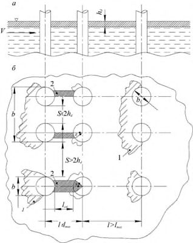
а, б - профиль и план ряда из столбов диаметром 1 b 1 - скол (смятие) льда; 2 - срез льда между столбами
Рисунок 22 - Характер разрушения ледяного покрова в зависимости от расположения элементов опор относительно друг друга
Максимальное расстояние между элементами ряда (по их осям) max l , при котором происходит срез льда между этими элементами, определяется по формуле
При max l l каждый элемент в ряду, расположенный вдоль направления движения ледяных полей, работает независимо друг от друга (у каждого элемента происходит смятие льда).
При первой подвижке льда на второй и последующие элементы системы вертикальных колонн (свай, свай-оболочек и т.п.), расположенные вдоль направления движения ледяных полей на расстоянии друг от друга (по осям) max l l , действует сила cut F , которую следует определять как доли от силы 1 F , действующей на первый элемент ряда
где ξ -коэффициент снижения воздействия льда на последующие элементы ряда
где cut n -число плоскостей среза между элементами ряда; cut l -длина плоскости среза;
0 ξ - коэффициент, определяемый по формуле
2 cut n = при одиночном ряде;
1 cut n = при двух взаимодействующих рядах; при трёх и более взаимодействующих рядах для крайних 1 cut n = , для внутренних рядов 0 cut n = (т.е. ледовая нагрузка отсутствует).
За одиночный принимают ряд, который по фронту (поперёк направления нагрузки) удалён (имеется просвет) от других сооружений (или их элементов) на 2 d S h .
За число взаимодействующих рядов более двух принимают ряды, в которых по фронту есть просветы 2 d S h .
где α -угол сектора элемента опоры, градус, в плане, в пределах которого происходит срез льда. В диапазоне 30 α 90 αопределяют по формуле
где α половина угла сектора, на ширине которого происходит срез льда между столбами.
, где , b p F -усилие при разрушении ледяного покрова за счёт смятия льда, определяемое по формуле (52); cut F -усилие, при котором происходит срез льда между элементами ряда, определяемое по формуле (61) при 1 cut n = . Составляющая силы y F , характеризующая сдвиг, отлична от нуля в том случае, если внешняя плоскость сдвига «упирается» в нижестоящий элемент (рисунок 23). Это условие соблюдается при неравенстве 1 / sin γ l b .
При соблюдении указанных выше двух условий для расстояния l между элементами на второй и последующие элементы взаимодействующего ряда, расположенного ниже по направлению движения ледяных полей (на рисунке 23 ряд №2), действует сила, определяемая по формуле (61) при 1 cut n = .
Если взаимодействующих рядов больше двух, то для последующих элементов внутренних рядов 0 cut n = (т.е. нагрузка отсутствует).
При несоблюдении неравенства 1 / sin γ l b с некоторым запасом принимается, что последующие элементы взаимодействующих (а также невзаимодействующих) рядов рассчитываются как первые элементы в рядах, параллельных направлению нагрузки (7.10), т.е. как при max l l (рисунок 23).
Под взаимодействующими рядами понимаются ряды, между элементами которых в направлении параллельном поперечной оси опоры просветы 2 d S h .
1 -скол (смятие льда); 2 -плоскость среза льда Рисунок 23 - Схема разрушения льда при косом направлении воздействия ледяных полей на элементы опор
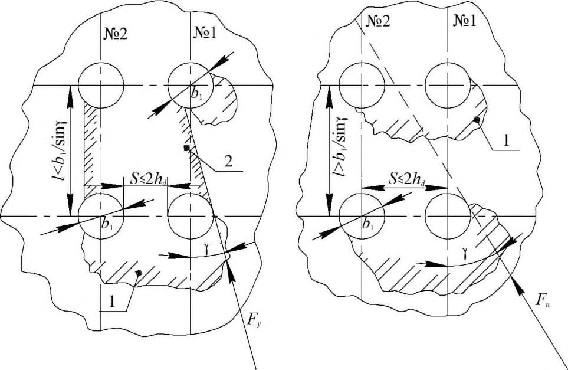
При косом подходе ледяных полей к опоре ( γ 10 ), элементы которой составляют два и более продольных ряда, нагрузку воспринимают, кроме первых элементов продольных рядов (как при отсутствии косины), все элементы ряда № 1 (рисунок 23). Расчёт нагрузки на каждый элемент определяют согласно 7.10. Причём для последующих элементов ряда № 1 в расчётах следует принимать 1 ( )sin γ S l b = -.
в которой величины μ p , V p , i p и μ, a p , МПа, определяются по формулам:
где max V - максимальная скорость течения воды подо льдом в период ледохода, м/с;
,max w V - максимальная скорость ветра в период ледохода, м/с; m L - средняя длина ледяного поля по направлению потока, принимаемая по данным натурных наблюдений, при их отсутствии для рек m L принимается равной утроенной ширине реки, м; i - уклон поверхности потока; d h и A - обозначения те же, см. 7.8;
H - глубина воды перед сооружением, м.
При этом, нагрузка s F , определённая по формуле (69), не может быть больше нагрузки , b w F , определённой по формуле (53) при 0,1 V k = .
Примечания
1 Расчётная ширина ледяного поля принимается по данным натурных наблюдений, а для затворов или аналогичных сооружений - не более ширины пролёта сооружения.
2 Точку приложения равнодействующей ледовой нагрузки необходимо принимать на 0,2 d h ниже расчётного уровня воды в зимний период, на 0,4 d h - в период весеннего ледохода.
Нагрузки на сооружения от сплошного ледяного покрова при его температурном расширении
где нагрузка на единицу длины сооружения от воздействия сплошного ледяного поля при его температурном расширении q , кН/м, принимается как наибольшее из значений q , определённых для случаев, когда из ряда наблюдений за температурой воздуха приняты расчётные периоды с минимальной температурой и соответствующим ей градиентом или с максимальным градиентом и соответствующей ему температурой; b - обозначение см. в 7.8.
где d h - обеспеченная толщина ровного льда, м (7.8);
L k -коэффициент потери устойчивости ледяного покрова, выбираемый по таблице 30.
Таблица 30
| Протяжённость ледяного покрова, м | 50 | 70 | 90 | 120 | 150 и более |
|---|---|---|---|---|---|
| Коэффициент L k | 1 | 0,9 | 0,8 | 0,7 | 0,6 |
- p -давление за счёт упругой и пластической деформации, кПа , при температурном расширении льда солёностью 2 S ‰ принимается равным 100 кПа и нагрузка на единицу длины сооружения определяется по формуле
При солёности 2 S ‰ давление p определяется по формуле
где 0 σ - предел упругости льда при сжатии, кПа, α - коэффициент линейного расширения льда, град -1 , t V - скорость повышения температуры воздуха, град /c , μ - коэффициент вязкости льда, кПа∙с, определяемый по формулам:
i t - температура льда, о С, определяемая по формуле
0min t - начальная минимальная температура, с которой начинается ее повышение, о С,
0 η -относительная толщина ледяного покрова с учётом влияния снега, определяемая по формуле
red h - приведённая толщина ледяного покрова, м, определяемая по формуле
s h - наименьшая толщина снежного покрова, м, λ - теплопроводность льда, Вт/(мК), α коэффициент теплоотдачи с верхней поверхности ледяного покрова, Вт/(м² ∙К), определяемый по формуле
w - средняя скорость ветра, м/c; коэффициент B определяется по таблице 31. ψ , φ - безразмерные коэффициенты, принимаемые по графикам рисунков 24 и 25 при заданных относительных значениях толщины ледяного покрова и безразмерного значения 2 τ Fo d a h = , a - коэффициент температуропроводности льда, м² /c.
Таблица 31
| air t , о С, | -40 | -30 | -20 | -10 | 0 | 10 |
|---|---|---|---|---|---|---|
| B , Дж/(м³ ∙К) | 7,12 | 6,88 | 6,67 | 6,48 | 6,27 | 6,07 |
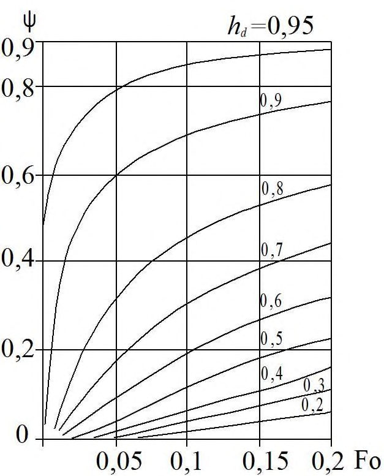
Рисунок 24 - Графики значений коэффициента ψ
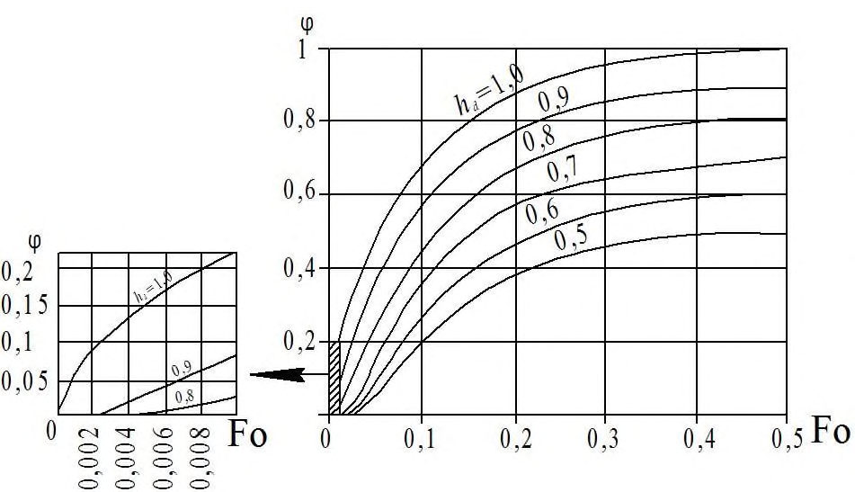
где
,
, c d
R b h
Рисунок 25 - Графики значений коэффициента φ
При этом нагрузка от температурного расширения, определённая по формуле (75), должна быть не более нагрузки, определённой по формуле
где l - смещение сооружения по направлению и на уровне действия нагрузки, м; b K -коэффициент упругой податливости сооружения, м/МН.
Температурное расширение ледяного поля может быть определено по формуле
где α -коэффициент линейного расширения льда, 1/град; φ коэффициент, определяемый по графикам рисунка 25; T -расчетный перепад температуры наружного воздуха, о С; L - расстояние от сооружения до берега, м.
Для свайного ростверка с высотой стоек , H м, коэффициент податливости конструкции определяется по формуле
Нагрузка от температурного расширения , , t h F рассчитанная по формуле (85), должна быть не более определенной по формуле
- обозначения см. в 7.8.
Для условий нагрузки от температурного расширения V k =0,1.
Примечание - В приливных морях нагрузки от температурного расширения льда на гидротехнические сооружения не учитываются.
Нагрузки от примёрзшего к сооружению ледяного покрова при изменении уровня воды
где 0 h - изменение УВ, м; при этом 0 d h h ; d h - обеспеченная толщина ровного льда, м (7.8); v - кинематическая вязкость воды при температуре 0°С, равная 6 1 793 10 v , -= м² /с. а - при понижении УВ; б - при повышении УВ; УВЛ - уровень воды при ледоставе Рисунок 26 - Схемы приложения нагрузок от примёрзшего к сооружению ледяного покрова при изменении уровня воды
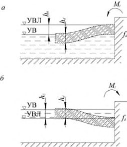
Нагрузка d f , определённая по формуле (89), должна быть не более нагрузки lim d, f , МН/м, определяемой по формуле
где lim σ c, - предельное напряжение в сжатом слое изгибаемого ледяного покрова, МПа, определяемое как ( ) i i C + для нижнего слоя ледяного покрова при температуре b t в случае понижения уровня воды или для верхнего слоя ледяного покрова при температуре u t в случае повышения уровня воды; lim σ t , - предельное напряжение в растянутом слое изгибаемого ледяного покрова, МПа, определяемое как 0,3( ) i i C + для верхнего слоя ледяного покрова при температуре u t в случае понижения уровня воды или для нижнего слоя ледяного покрова при температуре b t в случае повышения уровня воды; u t - температура льда на границе лёд-воздух, град.
Примечание - В приливных морях нагрузки от примерзания льда к сооружениям не учитываются.
где 0 h , d h - обозначения см. в 7.23.
При этом момент силы l M , определённый по формуле (91), должен быть не более момента ,lim l M , (МН·м)/м, определяемого по формуле
где lim σ c, , lim σ t , - обозначения см. в 7.23.
где f k - коэффициент, определяемый по формуле
где D - поперечный размер (диаметр) опоры или свайного куста, м;
Примечания
1 При прямоугольной форме опоры в плане со сторонами b и c или для сооружения, состоящего из системы колонн или куста свай с внешними размерами опорной части на уровне действия льда b и c , м, принимается D bc = , м.
2 Нагрузки от примерзания льда к сооружениям, расположенным в приливных морях, не учитываются. а - при понижении УВ; б
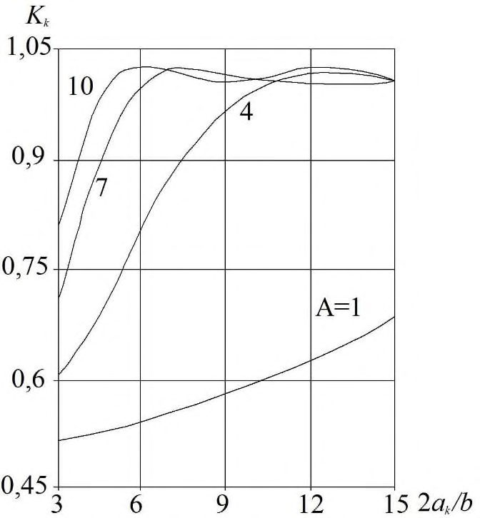
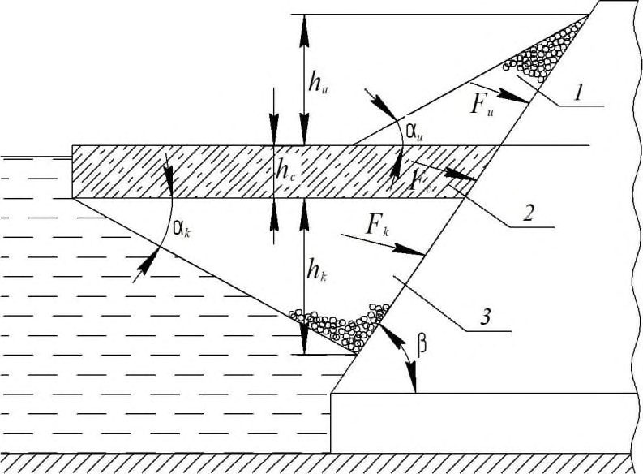
- при повышении УВ
Рисунок 27 - Схемы приложения нагрузки к отдельно стоящей опоре от примёрзшего к ней ледяного покрова при изменении уровня воды
где K -коэффициент, определяемый как произведение коэффициентов k K , принимаемых для каждой из n колонн по графикам рисунка 29 при заданных значениях k a , b и параметра 1 12 3 2 11 / d d gh b A h v = , v - кинематическая вязкость воды, м² /с; при 9,81 g = м/с 2 и 6 1 7 10 v , -= м² /с параметр 3 4 d b A h = . k a - расстояние от оси произвольно выбранной основной колонны до оси k -й колонны (рисунок 28), м; n - число колонн в сооружении; b , d h и F d,p - обозначения см. в 7.8, 7.23, 7.25.
Рисунок 28 - Схема приложения нагрузки к сооружению, состоящему из системы вертикальных колонн, от примёрзшего к нему ледяного покрова при повышении уровня воды (при понижении уровня воды сила Fd,f направлена вниз)
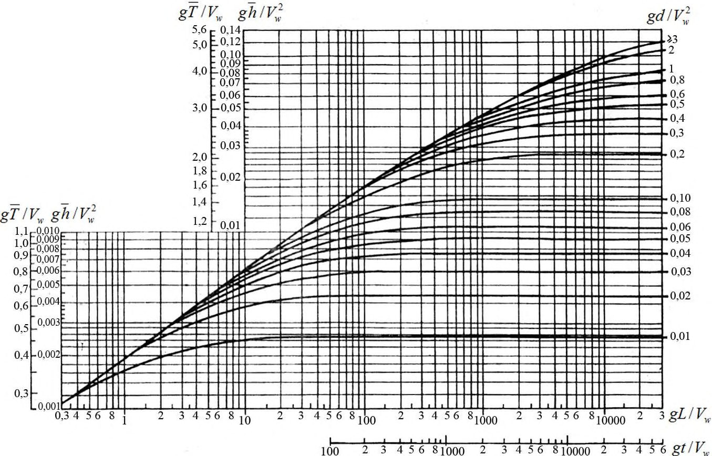
Нагрузки на сооружения от заторных и зажорных масс льда
где b, j R -нормативное сопротивление заторной массы льда смятию, МПа, определяемое по данным натурных наблюдений; при их отсутствии принимается равным:
- 0,45 МПа - для участков рек севернее линии «Воркута - Ханты-Мансийск Красноярск - Улан-Удэ - Благовещенск - Николаевск на Амуре»,
- 0,35 МПа - между линиями «Воркута - Ханты-Мансийск - Красноярск -УланУдэ - Благовещенск - Николаевск на Амуре» и «Архангельск - Киров - Уфа - УстьКаменогорск»,
0,25 МПа - южнее линии «Архангельск - Киров - Уфа - Усть-Каменогорск»; b,i h - расчётная толщина заторной массы, м, определяемая по данным натурных наблюдений, а при их отсутствии по формуле
где b,i H - средняя глубина реки выше затора при максимальном расходе воды заторного периода, м; i a - коэффициент, принимаемый по таблице 32; m , b - обозначения см. в 7.8.
Таблица 32 - Значения коэффициента для определения расчётной толщины заторной массы
| Значение b,i H | 3 | 5 | 10 | 15 | 20 | 25 |
|---|---|---|---|---|---|---|
| Коэффициент i a | 0,85 | 0,75 | 0,45 | 0,40 | 0,35 | 0,28 |
Рисунок 29 - Графики значений коэффициентов k K
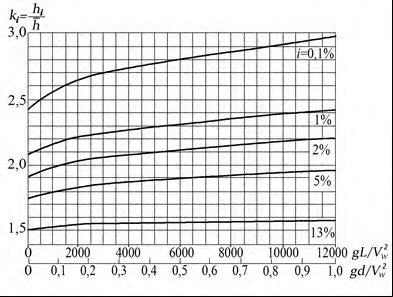
где b, j R - нормативное сопротивление зажорной массы смятию, МПа, определяемое по данным натурных наблюдений; при их отсутствии принимается равным 0,12 МПа;
- j h -расчётная толщина зажора, м, определяемая по данным натурных наблюдений; при их отсутствии принимается равной 0,8 от средней глубины потока при расходе воды зажорного периода; m , b - обозначения см. в 7.8.
Нагрузки от движущегося тороса
где u F - нагрузка от надводной части ледяного образования (паруса), МН;
F k F c - нагрузка от консолидированной части ледяного образования, МН; - нагрузка от подводной части ледяного образования (киля), МН.
- а) горизонтальная составляющая нагрузки F u,h , МН,
1 - надводная часть тороса (парус); 2 - консолидированная часть тороса; 3 - киль тороса Рисунок 30 - Расчётная модель тороса в момент наибольшего воздействия на сооружение
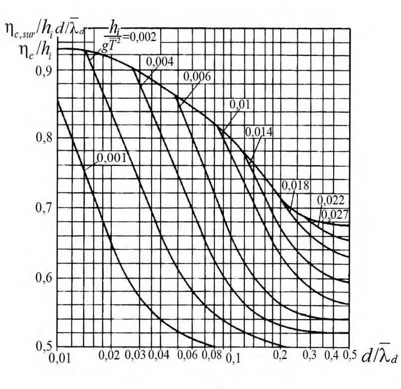
- б) вертикальная составляющая нагрузки u,v F , МН
где ρ i - плотность льда, кг/м³ ;
Ψ u - пористость ледяного образования, при отсутствии специальных исследований принимается 0 5 u , = ; b u - средняя ширина преграды по фронту в зоне действия ледяного образования, м; c u - сцепление между обломками льда в ледяном образовании, МПа, определяемое по данным испытаний; при их отсутствии принимается 0 003 0 005 c u , ... , = МПа; φ u -угол внутреннего трения ледяного образования, град; при отсутствии специальных исследований следует принимать φ 35 40 u = - ; h u - расчётная высота ледяного образования, определяемая по натурным данным; при их отсутствии h u определяется по формуле
где t h - толщина льда на момент образования тороса, м, но не более 0,6 м; φ u, k и u,c k - коэффициенты горизонтальной составляющей пассивного давления ледяного образования, вычисляемые по формулам:
где α f - угол трения между льдом и сооружением, град;
f -коэффициент трения между льдом и сооружением, при отсутствии исследований принимается 0 1 0 2 f , , = -; α u - угол наклона откоса ледяного образования к горизонту, при отсутствии исследований принимается α 30 u = ; β - обозначение см. в 7.9.
Точка приложения равнодействующей нагрузки от надводной части ледяного образования принимается выше уровня воды на 1/3 h u , при 0 u,v F нагрузка на сооружение направлена вверх.
Точка приложения равнодействующей нагрузки от консолидированной части принимается ниже уровня воды на 0 5 c , h .
- а) горизонтальная составляющая нагрузки k,h F , MH
- б) вертикальная составляющая нагрузки r,h F , MH
где ψ k - пористость (пустотелость) ледяного образования, определяемая по данным испытаний; при их отсутствии принимается ψ 0 3 0 4 k , , = -;
- k h - расчётная глубина киля ледяного образования, м; при назначении расчётной глубины ледяного образования следует учитывать, что 2 6 k u h / h = -;
- k b - средняя ширина преграды по фронту в зоне действия ледяного образования, м;
- k c - сцепление (с учётом зацепа) ледяного образования, МПа, определяемое по данным испытаний; при их отсутствии принимается 0 02 0 03 k c , , = -МПа;
- φ k - угол внутреннего трения ледяного образования, град, определяемый по данным испытаний; при их отсутствии принимается φ 15 20 k = - ;
- k k -коэффициент горизонтальной составляющей пассивного давления нагромождения обломков льда, вычисляемый по формулам:
ρ - обозначение см. в 7.9.
Нагрузка k,h F , определённая по формуле (111), должна быть не больше нагрузки b, j F , определённой по формуле (99) при замене в ней величин b и j h на k b и k h соответственно.
Точка приложения равнодействующей нагрузки от подводной части ледяного образования принимается ниже уровня воды на 0 33 k , h .
Примечание- Нагрузка на сооружение вертикального профиля определяется при β 90 = .
Нагрузки от движущегося айсберга
- частота появления айсбергов в заданном квадрате моря (2 ○ по широте и 5 ○ по долготе) и возможность соударения айсберга и сооружения (определяются по результатам мониторинга айсбергов в районе строительства сооружений и по архивным данным);
- наиболее вероятные (расчётные) размеры айсберга;
- скорость подхода айсберга к сооружению V , м/с (по данным мониторинга и архивным данным);
- геометрические размеры айсберга: высота надводной части h u , м; глубина погружения подводной части k h , м, ширина b , м; длина L , м (по данным мониторинга и архивным данным);
- пористость киля айсберга (по данным мониторинга);
- коэффициент формы айсберга f k ;
- коэффициент формы фронтальной поверхности сооружения m (по таблице 17);
- гидрометеорологический режим в заданном квадрате моря.
Таблица 33
| Относительный объём пустот в теле айсберга | 0,0 | 0,1 | 0,2 | 0,3 | 0,4 | 0,5 |
|---|---|---|---|---|---|---|
| Коэффициент формы айсберга, f k | 1,0 | 0,9 | 0,8 | 0,7 | 0,6 | 0,5 |
Нагрузка от надводной части F u , МН, определяется по формуле
где b , b k , V k , m c R - обозначения и способ определения величин см. в 7.8 и 7.4. fu k - коэффициент формы надводной части по таблице 33. k - коэффициент, принимаемый по таблице 34.
Таблица 34
| Значение / u b h ( / k b h ) | 0,3 и менее | 1 | 3 | 10 | 20 | 25 и более |
|---|---|---|---|---|---|---|
| Коэффициент k | 1 | 0,9 | 0,8 | 0,6 | 0,5 | 0,4 |
Нагрузка от подводной части айсберга k F , МН, определяется по формуле
где μ - коэффициент трения поверхности льда о воду, при отсутствии специальных наблюдений следует принимать μ=0,5; cs k - коэффициент условий подхода, принимаемый по таблице 35 в зависимости от угла подхода айсберга к сооружению, α , град. k fk - коэффициент формы подводной части айсберга (по таблице 33); fr k - коэффициент лобового сопротивления подводной части айсберга.
Таблица 35
| Угол подхода айсберга к сооружению, α | < 45 ○ | 60 ○ | 75 ○ | 90 ○ |
|---|---|---|---|---|
| Коэффициент условий подхода, cs k | 1 | 0,9 | 0,7 | 0,4 |
γ e - плавучесть подводной части айсберга, определяемая по формуле
kf R - прочность киля на сжатие при температуре замерзания, МПа,
Предложенные расчётные соотношения применимы для айсбергов объемом не более 500 тыс. м³ . Учитывая сложные условия взаимодействия большого объёма льда и сооружения, для уточнения нагрузок могут проводиться специальные исследования, включающие определение массы айсберга и скорость его перемещения в исследуемом районе.
АПриложение А. Элементы волн на открытых и огражденных акваториях
А.1 Элементы ветра над поверхностью водоемов должны определяться путем численного прогноза на основе результатов статистической обработки барических полей с помощью вероятностного моделирования и с учетом натурных данных.
А.2 Элементы течений по глубине водоемов должны устанавливаться путем гидродинамического и вероятностного моделирования с учетом элементов приливных и стоковых течений, а также натурных данных.
А.3 Определение элементов волн на открытых и огражденных акваториях следует проводить согласно А.6 - А.20.
В качестве исходных данных следует использовать карты глубин и данные об элементах ветра, полученные в соответствии с А.1.
Верификация полученных значений элементов волн проводится на основе данных измерений, выполненных в натурных условиях.
А.4 Трансформацию волн на течении следует учитывать с помощью апробированных методов расчета.
А.5 Определение характеристик волнения на основе гидродинамического и вероятностного моделирования должно выполняться с использованием спектральнодискретных или спектрально-параметрических моделей.
Верификацию результатов гидродинамического моделирования рекомендуется проводить по результатам измерений характеристик волнения в натурных условиях или на физических моделях.
Элементы волн в глубоководной зоне
А.6 Средняя высота hd , м, и средний период волн T , с, в глубоководной зоне должны определяться по расчетной (анемометрической) скорости ветра Vw по верхней огибающей кривой рисунка А.1. По значениям безразмерных параметров gt / Vw и 2 / gL V w , и верхней огибающей кривой следует определять значения 2 / d w gh V и / w gT V и по меньшему из них принять среднюю высоту и средний период волн.
Длину разгона волны L , м, следует определять по картографическому материалу с учетом направления ветра.
Значения длины предельного разгона Lu , м, принимаются по таблице А.1 для заданной расчетной скорости ветра Vw , м.
Таблица А.1
| Скорость ветра V w , м/с | 20 | 25 | 30 | 40 | 50 |
|---|---|---|---|---|---|
| Значения длины предельного разгона L u · 10 -3 , м | 1600 | 1200 | 600 | 200 | 100 |
Среднюю длину волн d , м, при известном значении T следует определять по формуле
Примечание - При переменных скоростях ветра вдоль разгона волн следует принимать hd по результатам последовательного определения высоты волны для участков с постоянными значениями скорости ветра.
Рисунок А.1 - Графики для определения элементов ветровых волн в глубоководной и мелководной зонах
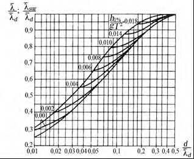
А.7 Высоту волны i %-ной обеспеченности в системе hdi , м, следует определять умножением средней высоты волн на коэффициент ki , принимаемый по графикам рисунка А.2 для безразмерной величины 2 / gL V w . При сложной конфигурации береговой черты значение 2 / gL V w должно приниматься по величине 2 / d w gh V и верхней огибающей кривой рисунка А.1.
Элементы волн с обеспеченностью по режиму 1 %; 2 %; 4 % необходимо принимать по функциям распределения, определяемым по натурным данным.
Рисунок А.2 - Графики значений коэффициента i k
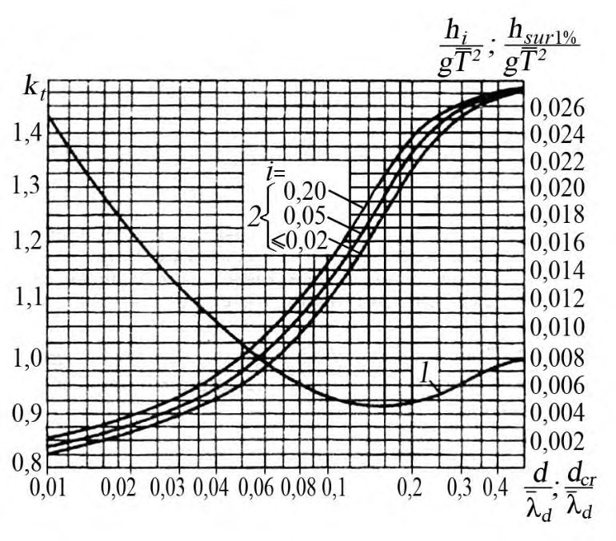
А.8 При сложной конфигурации подветренной береговой линии средняя высота волн hd , м, определяется по формуле
где hn , м, (при 1 n = ; 2 ; 3 ; 4 ) - средние высоты волн, которые должны приниматься согласно рисунку А.1 по расчетной скорости ветра Vw и проекциям лучей Ln , м, на направление главного луча, совпадающего с направлением ветра. Лучи проводятся из расчетной точки до пересечения с линией берега с интервалом ± 22,5° от главного луча.
При наличии перед расчетным створом большого числа препятствий в виде островов с угловыми размерами менее ±22,5° и суммой угловых размеров более 22,5° среднюю высоту волн hn , м, в секторе n следует определять по формуле
где æ ni , vnj - соответственно угловые размеры i -го препятствия и j -го промежутка между соседними препятствиями, отнесенные к углу 22,5° ( i =1,2,3… kn ; j =1,2,3…, ln ) в пределах n -го сектора, назначаемого в интервале ±11,25° от направления луча.
Средние высоты волн hni , hnj , м, следует определять по рисунку А.1 по расчетной скорости ветра и разгону L , равному проекциям лучей Lni и Lnj , м, на направление ветра. Лучи Lni и Lnj равны соответственно расстоянию от расчетной точки до пересечения с i -м препятствием или подветренным берегом в j -м промежутке.
Средний период волн определяется по безразмерному параметру / w gT V , который принимается согласно рисунку А.1 при известном значении 2 / d w gh V . Среднюю длину волн следует определять по формуле (А.1).
Примечание - Конфигурация береговой черты принимается сложной, если L max/ L min ≥2, где L max и L min - наибольший и наименьший лучи, проведенные из расчетной точки в секторе ±45° от направления ветра до пересечения с подветренным берегом.
А.9 Превышение вершины волны над расчетным уровнем c , м, определяется по безразмерному параметру / c i h (рисунок А.3) для данного значения 2 / i h gT при / 0,5 d d = .
Рисунок А.3 - Графики для определения значений / c i h в мелководной и , / c sur i h в прибойной зонах
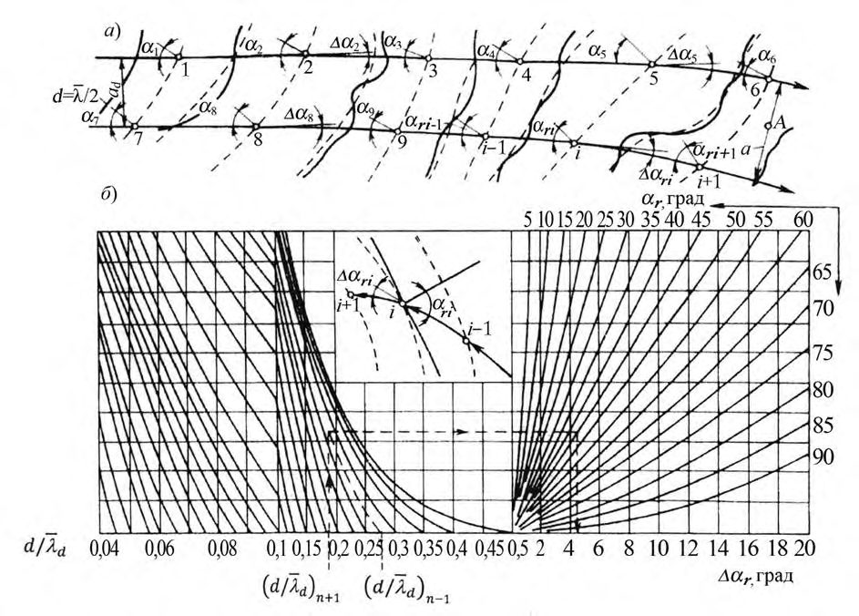
А.10 Период пика спектра Tp для спектральной плотности JONSWAP связан со средним периодом волн соотношением:
где γ - параметр пиковатости спектра JONSWAP .
А.11 Максимальная высота волны h max, м, для шторма длительностью t , с, определяется по формуле
где / N t T = - среднее число волн за период t , hS = h 13 % - значительная высота волн.
Элементы волн в мелководной зоне
А.12 Высоту волн i %-ной обеспеченности hi , м, в мелководной зоне с уклонами дна 0,002 и более следует определять по формуле
где kt - коэффициент трансформации; k r - коэффициент рефракции; k l - обобщенный коэффициент потерь. k i - коэффициент обеспеченности волн в системе.
Коэффициенты kt , kr и kl следует определять по А.13.
Длина волн, перемещающихся из глубоководной зоны в мелководную, определяется по рисунку А.4 при заданных значениях безразмерных параметров / d d и 2 1% / h gT . Период волн принимается равным периоду волн в глубоководной зоне.
Превышение вершины волны над расчетным уровнем c , м, следует определять по рисунку А.3 для безразмерных параметров / d d и 2 1% / h gT .
Рисунок А.4 - Графики для определения значений / d в мелководной и / sur d в прибойной зонах
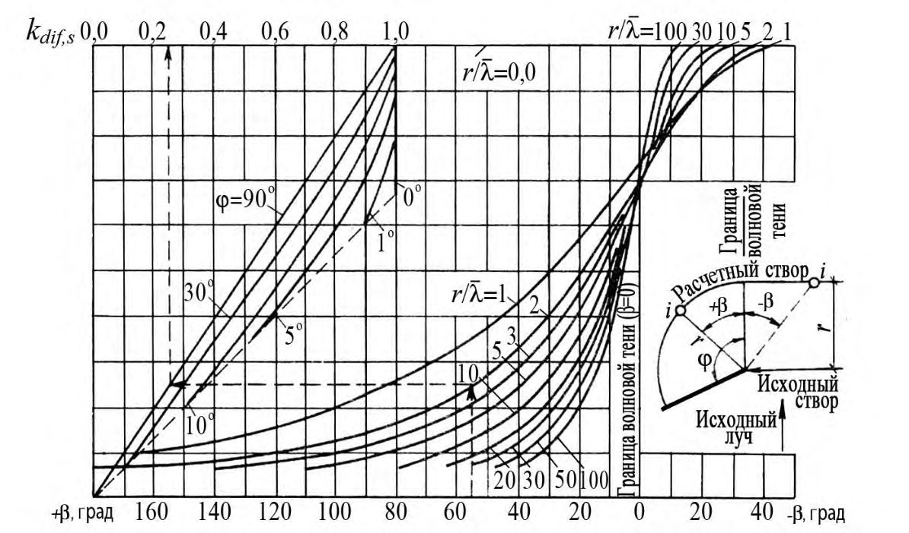
А.13 Коэффициент трансформации kt следует принимать по графику 1 рисунка А.5. Коэффициент рефракции kr должен определяться по формуле
где ad - расстояние между смежными волновыми лучами в глубоководной зоне, м; a - расстояние между теми же лучами по линии, проходящей через заданную точку мелководной зоны, м.
Лучи волн на плане рефракции в глубоководной зоне необходимо принимать по заданному направлению распространения волн, а в мелководной зоне их следует продолжать в соответствии со схемой А.6, a и графиками рисунка А.6, б согласно штриховой линии со стрелками.
Обобщенный коэффициент потерь kl должен определяться по заданным значениям параметра / d cr d и уклону дна i (таблица А.2); при уклонах дна 0,03 и более следует принимать значение обобщенного коэффициента потерь равным единице.
Примечание - При сложной конфигурации дна и частичной защищенности акватории значение коэффициента kr следует принимать по результатам определения коэффициентов рефракции для волновых лучей, проводимых из расчетной точки в направлениях через 22,5° от главного луча.
Рисунок А.5 - Графики для определения значений: коэффициента kt ( 1 ) и параметра / d cr d ( 2 )
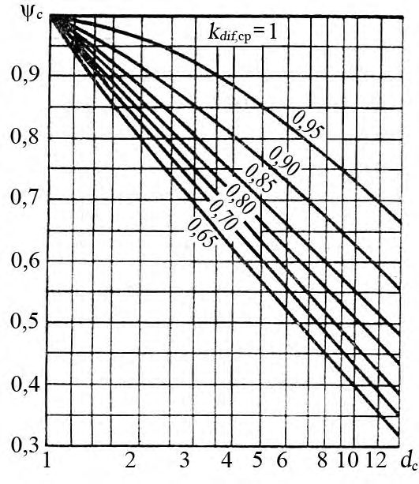
Таблица А.2
| Относительная глубина / cr d d | Значения коэффициента k l при уклонах дна i | Значения коэффициента k l при уклонах дна i |
|---|---|---|
| Относительная глубина / cr d d | 0,025 | 0,02…0,002 |
| 0,01 | 0,82 | 0,66 |
| 0,02 | 0,85 | 0,72 |
| 0,03 | 0,87 | 0,76 |
| 0,04 | 0,89 | 0,78 |
| 0,06 | 0,9 | 0,81 |
| 0,08 | 0,92 | 0,84 |
| 0,1 | 0,93 | 0,86 |
| 0,2 | 0,96 | 0,92 |
| 0,3 | 0,98 | 0,95 |
| 0,4 | 0,99 | 0,98 |
| 0,5 и более | 1 | 1 |
Рисунок А.6 - Схема ( а ) и графики ( б ) для построения плана рефракции
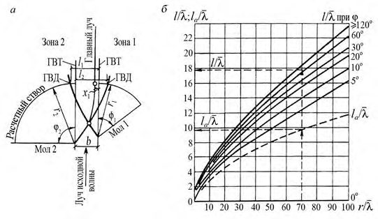
А.14 Среднюю высоту и средний период волн в мелководной зоне с уклонами дна 0,001 и менее необходимо определять по графикам рисунка А.1. По безразмерным параметрам 2 / gL V w и 2 / w gd V принимаются значения 2 / w gh V и / w gT V и по ним определяются h и T .
Высоту волны i %-ной обеспеченности в системе следует определять умножением средней высоты волн на коэффициент ki , принимаемый по графикам рисунка А.2. По безразмерным параметрам 2 / gL V w и 2 / w gd V определяются значения коэффициента ki , из которых принимается наименьшее.
Среднюю длину волн d при известном значении среднего периода T следует определять в соответствии с А.6.
Превышение вершины волны над расчетным уровнем должно определяться по рисунку А.3.
Примечание - Элементы волн, перемещающихся из мелководной зоны с уклонами дна 0,001 и менее в зону с уклонами дна 0,002 и более, должны определяться согласно А.12 и А.13, при этом высота исходной средней высоты принимается d h h = .
А.15 Учет переменных глубин вдоль линии разгона в мелководной зоне при уклонах дна 0.001 и менее производят следующим образом.
Профиль дна вдоль линии разгона, начиная от подветренного берега, разбивают на участки длиной Lj с примерно одинаковым уклоном в пределах каждого участка. В конце первого участка для безразмерных величин 2 / j w gd V и 2 / j w gL V определяют среднюю высоту волн j h по А.14. На каждом последующем участке по графикам на рисунке А.1 для безразмерных величин 1 2 j w gh V -и 2 j w gd V ( 1 j h -- средняя высота волн в начале j -го участка; d j - глубина воды в конце j -го участка) определяют условный разгон L экв ,j -1 . Далее в конце j -го участка для безразмерных величин 2 j w gd V и
, 1 2 ( ) j экв j w g L L V -+ определяется средняя высота волн j h по рисунку А.1. Указанный процесс применяется вдоль всей линии разгона волны.
Элементы волн в прибойной зоне
А.16 Высоту волн в прибойной зоне hsur 1 %, м, следует определять для заданных уклонов дна i по графикам 2 рисунка А.5: по безразмерной величине / d cr d находится значение 2 1% / sur h gT и по нему определяется hsur 1 %.
Длину волны в прибойной зоне sur , м, следует определять по верхней огибающей кривой рисунка А.4, превышение вершины волны над расчетным уровнем , c sur , - по верхней огибающей кривой рисунка А.3.
А.17 Критическая глубина dcr , м, при первом обрушении волн должна определяться для заданных уклонов дна i по графикам 2 рисунка А.5 методом последовательных приближений. По ряду задаваемых значений глубин d в соответствии с А.12 и А.13 определяются величины 2 / i h gT и по графикам 2 рисунка А.5 - соответствующие им значения / d cr d , из которых принимается dcr , численно совпадающее с одной из задаваемых глубин d.
А.18 Критическую глубину, соответствующую последнему обрушению волн dcr , u при постоянном уклоне дна, следует определять по формуле
где ku - коэффициент, принимаемый по таблице А.3; n - число обрушений (включая первое), принимаемое из ряда n = 2, 3 и 4 при выполнении неравенств 2 0,43 n u k - и 1 0,43 n u k - .
При определении глубины последнего обрушения dcr , u коэффициент ku или произведение коэффициентов должен приниматься не менее 0,35.
При уклонах дна более 0,05 следует принимать значение критической глубины dcr=dcr , u .
Примечание - При переменных уклонах дна глубина dcr , u принимается по результатам последовательного определения критических глубин для участков дна с постоянными уклонами.
Таблица А.3
| Уклон дна i | 0,01 | 0,015 | 0,02 | 0,025 | 0,03 | 0,035 | 0,04 | 0,045 | 0,05 |
|---|---|---|---|---|---|---|---|---|---|
| Коэффициент k u | 0,75 | 0,63 | 0,56 | 0,5 | 0,45 | 0,42 | 0,4 | 0,37 | 0,35 |
Элементы волн на огражденной акватории
А.19 Высоту дифрагированной волны hdif , м, на огражденной акватории следует определять по формуле
где kdif - коэффициент дифракции волн, определяемый согласно А.20, А.21 и А.22; hi - высота исходной волны i %-ной обеспеченности.
В качестве расчетной длины используется исходная длина на входе в акваторию.
А.20 Коэффициент дифракции волн kdif , s для акватории, огражденной одиночным молом (при заданном значении угла β, град, относительном расстоянии от головы мола до точки в расчетном створе dif k и значении угла φ, град), следует принимать в соответствии со схемой и графиками рисунка А.7 (штриховая линия со стрелками).
Рисунок А.7 - Графики для определения значений коэффициента kdif , s
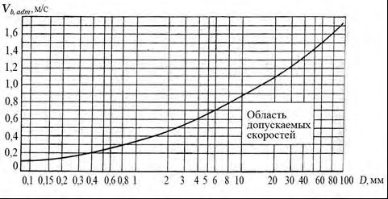
А.21 Коэффициент дифракции волн kdif , c на акватории, огражденной сходящимися молами, определяется по формуле
где ψ c - коэффициент, принимаемый по рисунку А.8 для определенных значений dc и kdif , cp .
Значение dc определяется по формуле
где l 1 и l 2 - расстояния от границ волновой тени (ГВТ) до границ дифракции волн (ГДВ), принимаемые в соответствии со схемой и графиками рисунка А.9 (штриховая линии со стрелками); b - ширина входа в порт, м, принимаемая равной проекции расстояния между головами молов на фронт исходной волны.
.
Значение коэффициента kdif , cp определяется так же, как и kdif , s согласно А.20 для точки пересечения главного луча с фронтом волн в расчетном створе.
Положение главного луча на схеме рисунка А.9, а необходимо принимать по точкам, расположенным от границы волновой тени (ГВТ) мола с меньшим углом φ i , град, на расстояниях x , м, определяемых по формуле
Рисунок А.8 - Графики значений коэффициента ψ c
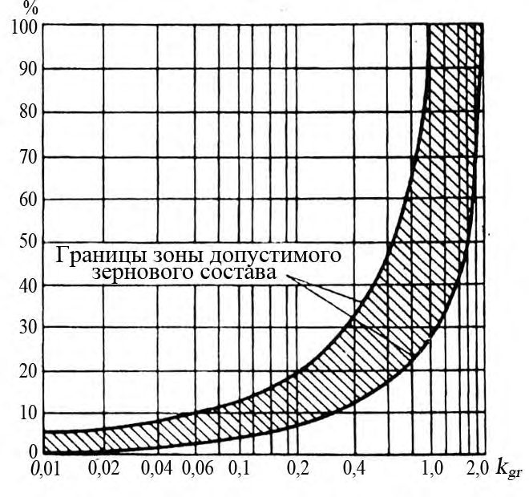
Рисунок А.9 - Схема ( а ) и графики ( б ) для определения значений l и l a
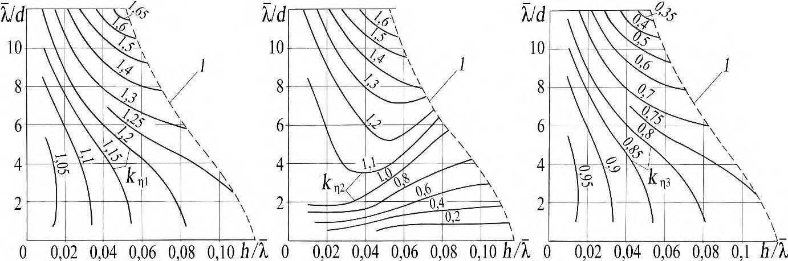
где la 1 и la 2 - величины, значения которых принимают в соответствии со схемой и графиками рисунка А.9.
А.22 Коэффициент дифракции волн kdif , b для акватории, огражденной волноломом, должен определяться по формуле
где kdif , s 1 и kdif ,s2 - коэффициенты дифракции волн, определяемые для головных участков волнолома согласно А.20.
А.23 Высоту дифрагированной волны с учетом отражения ее от сооружений и преград hdif , r , м, в данной точке огражденной акватории необходимо определять по формуле
k dif , s - коэффициент дифракции волн в створе отражающей поверхности, определяемый согласно А.20, А.21 и А.22; kr и kp - коэффициенты, определяемые по таблице Д.1 приложения Д; θ r - угол между фронтом волны и отражающей поверхностью, град; r /λ - относительное расстояние от отражающей поверхности до расчетной точки по лучу отраженной волны, при этом направление луча отраженной волны должно приниматься из условия равенства углов подхода и отражения волн; k ref , i - коэффициент отражения, принимаемый по таблице А.4; при угле наклона отражающей поверхности к горизонту более 45° следует принимать коэффициент отражения kref , i =1.
Примечание - Высоту волны на огражденной акватории с меняющимися глубинами следует уточнять согласно А.12 и А.13.
Таблица А.4
| Пологость волны λ/ h dif | Значения k ref , i при уклонах отражающей поверхности i | Значения k ref , i при уклонах отражающей поверхности i | Значения k ref , i при уклонах отражающей поверхности i |
|---|---|---|---|
| Пологость волны λ/ h dif | 1 | 0,5 | 0,25 |
| 10 | 0,5 | 0,02 | 0,0 |
| 15 | 0,8 | 0,15 | 0,0 |
| 20 | 1 | 0,5 | 0,0 |
| 30 | 1 | 0,7 | 0,05 |
| 40 | 1 | 0,9 | 0,18 |
где или
БПриложение Б. Определение высоты ветрового нагона
Б.1 Высота ветрового нагона hset , м, при постоянной глубине d акватории и без учета конфигурации береговой линии определяется по формуле
где α w - угол между продольной осью водоема и направлением ветра, град;
Vw - расчетная скорость ветра, м² /с;
L - длина разгона, м; kw - коэффициент, определяемый по формуле
v - коэффициент кинематический вязкости воздуха; при g=9,81 м/с 2 и v= 10 -5 м² /с;
Б.2 Высота волнового нагона hwav , м, в прибойной зоне определяется по формуле, рекомендуемой [3]
где hsur - расчетная высота волны по линии первого обрушения, м;
T - средний период волны.
Так как параметры волн ограничиваются предельно возможной их крутизной h / λ ≈ 0,1, предел высоты ветрового нагона hwav составляет ≈ 1,8 м.
ВПриложение В. Оценка устойчивости грунта, подверженного гидродинамическому воздействию (волны, течение)
В.1 Устойчивость грунта, слагающего дно акватории вблизи сооружения, подверженного волновому воздействию, оценивается сравнением максимальной придонной скорости Vb ,max (5.18, 5.20, 5.30) или Vf ,max (5.19) со значением допускаемой придонной скорости Vb , adm .
Значение Vb , adm , м/с, для грунта крупностью фракций D ≤ 100 мм следует принимать по рисунку В.1, а для грунта крупностью фракций D > 100 мм - по формуле
где ρ m - плотность материала грунта, т/м³ ; ρ - плотность воды, т/м³ .
При Vb ,max > Vb , adm или Vf ,max > Vb , adm следует учитывать возможность размыва дна акватории у основания сооружения и при необходимости предусматривать мероприятия по защите от размыва и подмыва основания сооружения.
Рисунок В.1 График допускаемых значений скоростей
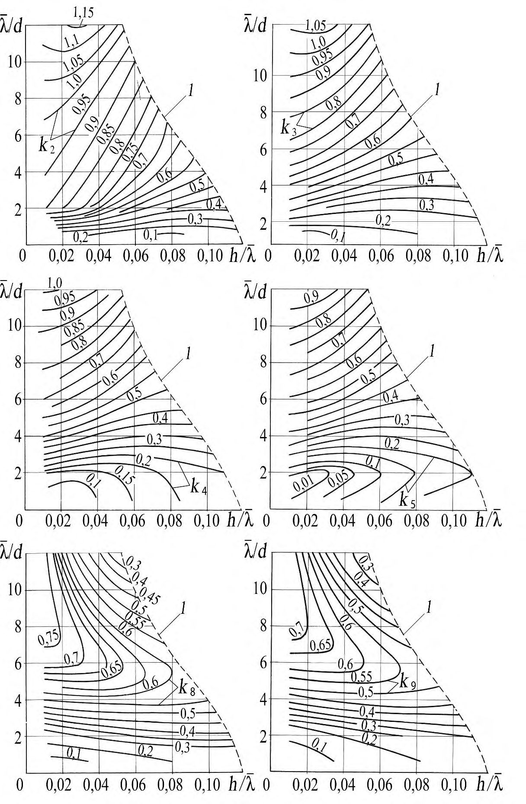
В.2 При назначении крупности крепления камнем дна акватории или поверхности насыпей (берм) следует производить проверку устойчивости материала крепления по формуле (В.1) и графику рисунка В.1.
- В.3 При креплении откосов, подверженных волновому воздействию, каменной наброской (горной массой), обыкновенными и фасонными бетонными и железобетонными блоками расчетную массу отдельного элемента m или mz , т, следует определять: при расположении камня или блока на участке откоса от верха сооружения до глубины z = 0,7 h по формуле
то же, при z> 0,7 h по формуле
где kfr - коэффициент, принимаемый по таблице В.1; при / 15 h , а также при сложном профиле численное значение коэффициента kfr следует уточнять по данным экспериментов на гидравлической модели; ρ m - плотность материала крепления, т/м³ .
Таблица В.1
| Коэффициент k fr | Коэффициент k fr | |
|---|---|---|
| Элементы крепления | при наброске | при укладке |
| Камень | 0,025 | - |
| Обыкновенные бетонные блоки | 0,021 | - |
| Тетраподы и другие фасонные блоки | 0,008 | 0,006 |
В.4 Крепление откосов несортированной каменной наброской (горной массой) выполняется при высоте волны не более 3,0 м, если пологость откоса ctg 5 , и не более 3,5 м при ctgφ>5. Несортированную каменную наброску следует считать пригодной для крепления откоса, если она характеризуется значениями коэффициента kgr зернового состава, соответствующими заштрихованной зоне на рисунке В.2.
Значение коэффициента kgr должно определяться для каждой фракции наброски по формуле
где m - расчетная масса, т, камня крепления; m i - средняя масса, т, камня i -й фракции наброски;
D и Di - приведенные диаметры, м, элементов каменной наброски, т.е. диаметры шара, объем которого равен среднестатистическому объему частиц массой соответственно m и mi :
При откосах, пологость которых находится в пределах 3 ≤ ctgφ < 5, расчетное значение массы m следует определять по формулам (В.2) и (В.3).
Рисунок В.2 - График для определения допустимого зернового состава несортированной каменной наброски для крепления откосов
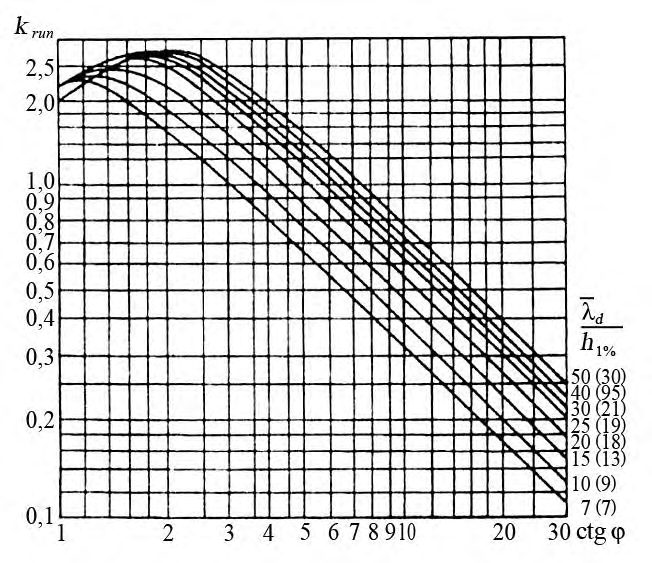
В.5 При пологости откосов 5 ≤ ctgφ ≤ 15, укрепляемых несортированной разнозернистой каменной наброской, расчетную массу камня m , т, соответствующую состоянию его предельного равновесия от действия ветровых волн, необходимо определять по формуле (В.2) при / 10 h с умножением полученных результатов на
.
Минимальное содержание фракций размером Di ≥ D должно приниматься в соответствии с таблицей В.2.
Таблица В.2
| Коэффициент разнозернистости D 60 / D 10 | 5 | 10 | 20 | 40-100 |
|---|---|---|---|---|
| Минимальное содержание, %(по весу), фракций размером D i ≥ D | 50 | 30 | 25 | 20 |
- В.6 При пологости откосов ctgφ < 3, укрепляемых несортированной разнозернистой каменной наброской, расчетную массу камня m , т, необходимо определять на основе экспериментальных исследований.
В.7 При совместном воздействии волн и течений, совпадающих по направлению, суммарное среднее по времени значение касательного напряжения на поверхность дна необходимо определять (при 0,8 c w ) по формуле
где τ - касательное напряжение на дно от воздействия течения, кПа; c w - среднее по времени касательное напряжение от воздействия волн, кПа (см. 5.18, формула (4)); U - средняя по глубине скорость течения, м/с; C - коэффициент Шези, м 1/2 /c.
При наличии угла между направлением волн и направлением течения суммарное среднее по времени касательное напряжение на поверхность дна должно вычисляться как векторная сумма касательных напряжений от волн и течений с учетом направлений.
В.8 При проектировании статических и /или динамически устойчивых креплений дна у обтекаемых преград с помощью каменной наброски в случае совместного воздействия волн и течений ( ) 0,8 w c применяется концепция критических касательных напряжений, согласно которой крупность защитного слоя D 50, м, определяется по формуле
где ψ cr - критическое значение числа Шильдса. При проектировании статически устойчивой защиты от размывов, для которой ее возможные деформации затрагивают верхний слой защитного камня на глубину не более чем D 50 значение ψ cr принимается в диапазоне 0,03-0,035 .
При устройстве вблизи обтекаемых преград (сооружений) динамически устойчивого крепления, которое может деформироваться на большую, чем D 50, глубину, не теряя при этом своей основной функции - защиты дна от размывов в течение заданного срока службы сооружения, значение ψ cr следует принимать равным 0,05-0,055. Кроме того, должны дополнительно разрабатываться критерии допустимой деформации крепления, превышение которой приводит к нарушению его защитных свойств.
В.9 При выполнении экспериментальных исследований креплений дна у обтекаемых преград следует обеспечивать: воспроизведение нерегулярного волнения с заданным спектром; правильный учет масштабных эффектов.
ГПриложение Г. Определение волновой нагрузки на вертикальные стены
- Г.1 При действии стоячей волны на вертикальную стену необходимо предусматривать (5.14) три случая определения возвышения или понижения свободной волновой поверхности , м, у вертикальной стены:
- а) max 1 k h = - при наибольшем значении отметки волновой поверхности у стены;
- б) 2 с k h = - при максимальном значении горизонтальной волновой нагрузки Pxc , кН/м, на стену;
- в) 3 t k h = -- при минимальном значении отметки волновой поверхности у стены.
Численные значения входящих коэффициентов 1 k , 2 k , 3 k определяются по графикам рисунка Г.1.
Рисунок Г.1 Графики значений коэффициентов 1 k , 2 k и 3 k
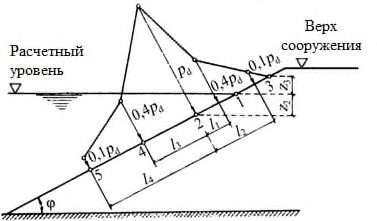
Г.2 Горизонтальную нагрузку на вертикальную стену Px кН/м, при воздействии стоячей волны для случаев «б» и «в», указанных в Г.1, следует принимать по эпюре волнового давления; при этом ординаты эпюры волнового давления p , кПа, на глубине z , м, следует определять по формулам таблицы Г.1, а численные значения входящих в них коэффициентов k 2, k 3, k 4, k 5, k 8 и k 9 - по графикам рисунка Г.2.
Г.3 Волновое давление p , кПа, на вертикальную стену с возвышением над расчетным уровнем верха сооружения z sup, м, менее чем на max , м, следует определять согласно Г.2 с последующим умножением полученных значений давления на коэффициент kc , определяемый по формуле
где знаки «плюс» и «минус» соответствуют положению верха сооружения выше или ниже расчетного уровня воды.
Рисунок Г.2 - Графики значений коэффициентов k 2 , k 3 , k 4 , k 5 , k 8 и k 9
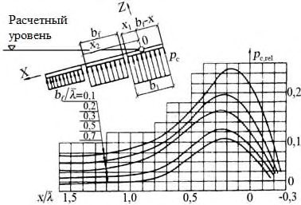
Таблица Г.1
| Номер точки | Заглубление точек z , м | Значение волнового давления p , кПа |
|---|---|---|
| Отметка волновой поверхности c | Отметка волновой поверхности c | Отметка волновой поверхности c |
| 1 | η с | p 1 = 0 |
| 2 | 0 | p 2 = k 2 ρ gh |
| 3 | 0,25 d | p 3 = k 3 ρ gh |
| 4 | 0,5 d | p 4 = k 4 ρ gh |
| 5 | d | p 5 = k 5 ρ gh |
| Отметка волновой поверхности t | Отметка волновой поверхности t | Отметка волновой поверхности t |
| 6 | 0 | p 6 = 0 |
| 7 | η t | p 7 = -ρ g η t |
| 8 | 0,5 d | p 8 = k 8 ρ gh |
| 9 | d | p 9 = k 9 ρ gh |
Возвышение или понижение свободной волновой поверхности определенное по Г.1, следует умножать на коэффициент kc .
Горизонтальная линейная волновая нагрузка Pхс , кН/м, в рассматриваемом случае должна определяться по площади эпюры волнового давления в пределах высоты вертикальной стены.
- Г.4 Горизонтальную нагрузку от дифрагированных волн со стороны огражденной акватории следует определять при относительной длине секции сооружения / 0,8 l ; при этом расчетную эпюру волнового давления со значениями p , кПа, допускается выполнять по трем точкам, рассматривая следующие случаи:
- а) вершина волны совмещена с серединой секции сооружения (5.16, рисунок 4, а ):
- б) подошва волны совмещена с серединой секции сооружения (5.16, рисунок 4, б ):
где hdif - высота дифрагированной волны, м, определяемая согласно приложению А; k l - коэффициент, принимаемый по таблице Г.2
Таблица Г.2
| Относительная длина секции / l | 0,1 | 0,2 | 0,3 | 0,4 | 0,5 | 0,6 | 0,7 | 0,8 |
|---|---|---|---|---|---|---|---|---|
| Коэффициент k l | 0,98 | 0,92 | 0,85 | 0,76 | 0,64 | 0,51 | 0,38 | 0,26 |
Примечание - При глубине со стороны огражденной акватории 0,3 d следует строить треугольную эпюру волнового давления, принимая на глубине 3 0,3 z = волновое давление равным нулю (5.16, рисунок. 4).
- Г.5 Эпюра взвешивающего волнового давления на берменные массивы должна приниматься трапецеидальной (рисунок 2, б ) с ординатами pbr , i , кПа, определяемыми (при i =1, 2 или 3) по формуле
где xi - расстояние от стены до соответствующей грани массива, м; k br - коэффициент, принимаемый по таблице Г.3; p f - волновое давление на уровне подошвы сооружения.
Таблица Г.3
| Относительная глубина / d | Коэффициент k br при пологостях волн / h | Коэффициент k br при пологостях волн / h |
|---|---|---|
| Относительная глубина / d | 15 и менее | 20 и более |
| Менее 0,27 | 0,86 | 0,64 |
| От 0,27 до 0,32 | 0,6 | 0,44 |
| Более 0,32 | 0,3 | 0,3 |
ДПриложение Д. Определение высоты наката волн на откос
Д.1 Высоту наката волн на откос hrun , м, рекомендуется определять по формуле
где kr , kp - коэффициенты шероховатости и проницаемости откоса, принимаемые по таблице Д.1; k sp - коэффициент, принимаемый по таблице Д.2; krun - коэффициент, зависящий от глубины воды d перед сооружением и пологости волны 1% / d h и принимаемый по графикам рисунка Д.1. Значения параметра 1% / d h , указанные без скобок, относятся к случаю dh ≥ 2 h 1 %. При глубине перед сооружением d < 2 h 1 %., коэффициент krun следует принимать по значению d , соответствующему глубине d = 2 h 1 % при значениях параметра 1% / d h , указанному на рисунке Д.1 в скобках. k i - коэффициент обеспеченности по накату, принимаемый по таблице Д.3; k α - коэффициент, принимаемый по таблице Д.4 в зависимости от угла α между урезом воды и фронтом волны. h
1 % - высота волн обеспеченностью 1% в системе.
Примечание - При определении высоты наката волн на песчаные и гравийно-галечниковые пляжи необходимо учитывать изменение уклона пляжа во время шторма. Наибольшее понижение пляжа на линии уреза воды следует принимать равным 0,3 h , м, с выклиниванием на нулевые значения на берегу до высоты наибольшего наката, а в подводной части до глубины d=dcr , для размываемых грунтов или на глубине d=dcr , u , - для неразмываемых грунтов (где h , dcr и dcr , u - соответственно высота волны и глубина воды в створах первого и последнего обрушений, м).
Рисунок Д.1 Графики значений коэффициента krun
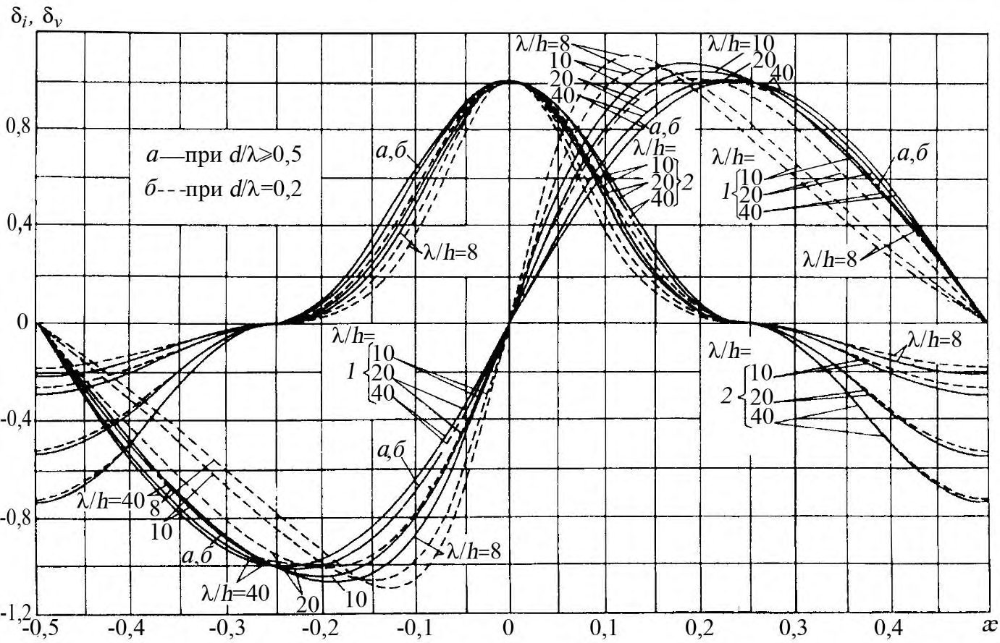
Таблица Д.1
| Конструкция крепления откоса | Относительная шероховатость r / h 1% | Коэффициент k r | Коэффициент k p |
|---|---|---|---|
| Бетонные (железобетонные) плиты | - | 1 | 0,9 |
| Гравийно-галечниковое или каменное покрытие, бетонные (железобетонные) блоки | Менее 0,002 0,005-0,01 0,02 0,05 0,1 | 1 0,95 0,9 0,8 0,75 0,7 | 0,9 0,8 0,7 0,6 |
| Гравийно-галечниковое или каменное покрытие, бетонные (железобетонные) блоки | 0,85 | ||
| Гравийно-галечниковое или каменное покрытие, бетонные (железобетонные) блоки | Более 0,2 | 0,5 | |
| Гравийно-галечниковое или каменное покрытие, бетонные (железобетонные) блоки | |||
| Гравийно-галечниковое или каменное покрытие, бетонные (железобетонные) блоки | |||
| Гравийно-галечниковое или каменное покрытие, бетонные (железобетонные) блоки |
Примечание - Характерный размер шероховатости r , м, следует принимать равным среднему диаметру зерен материала крепления откоса или среднему размеру бетонных (железобетонных) блоков.
Таблица Д.2
| Значение ctgφ | 1-2 | 3-5 | более 5 |
|---|---|---|---|
| Коэффициент k sp при скорости ветра V w , м/с: | |||
| 20 и более | 1,4 | 1,5 | 1,6 |
| 10 | 1,1 | 1,1 | 1,2 |
| 5 и менее | 1 | 0,8 | 0,6 |
| Обозначение: «φ» - угол наклона откоса к горизонту, град. | Обозначение: «φ» - угол наклона откоса к горизонту, град. | Обозначение: «φ» - угол наклона откоса к горизонту, град. | Обозначение: «φ» - угол наклона откоса к горизонту, град. |
Таблица Д.3
| Обеспеченность по накату i ,% | 0,1 | 1 | 2 | 5 | 10 | 30 | 50 |
|---|---|---|---|---|---|---|---|
| Коэффициент k i | 1,1 | 1 | 0,96 | 0,91 | 0,86 | 0,76 | 0,68 |
Таблица Д.4
| Значение угла α | 0 ○ | 10 ○ | 20 ○ | 30 ○ | 40 ○ | 50 ○ | 60 ○ |
|---|---|---|---|---|---|---|---|
| Коэффициент k α | 1 | 0,98 | 0,96 | 0,92 | 0,87 | 0,82 | 0,76 |
Д.2 Волновое давление на откос при 1,5 ≤ ctgφ ≤ 5, укрепленный монолитными или сборными плитами, определяется эпюрой (рисунок Д.2), в которой максимальное расчетное волновое давление pd , кПа, равно
где ks и kf - коэффициенты, зависящие от пологости волны / h и угла заложения откоса φ, определяются по формулам:
prel - максимальное относительное волновое давление в точке 2 (рисунок. Д.2), определяемое при h < 4 м по формуле
при h ≥ 4 м prel = 1,7.
Ордината z 2, м, точки 2 (рисунок Д.2) приложения максимального расчетного волнового давления pd определяется по формуле
где A и B - параметры, м, значения которых определяются по зависимостям:
Ордината z 3, м, соответствующая высоте наката волн на откос, принимается согласно Д.1.
На участках крепления по откосу выше и ниже точки 2 (см. рисунок. Д.2) значения ординат эпюры волнового давления p , кПа, принимаются на расстояниях, м: при при где φ и l φ и
3=0,0265 l
4=0,0675 φ φ p= p=
0,4
0,1 pd pd
;
,
Ординаты эпюры волнового противодавления pc , кПа, на плиты крепления откосов определяются по формуле
где pc , rel - относительное волновое противодавление, принимаемое по графикам рисунка Д.3.
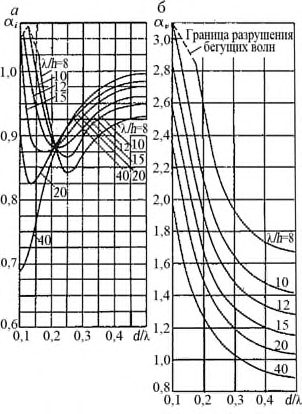
l
1=0,0125 l
2=0,0325
Рисунок Д.2 Эпюра максимального расчетного волнового давления на откос, укрепленный плитами
Рисунок Д.3 Графики для определения относительного волнового противодавления
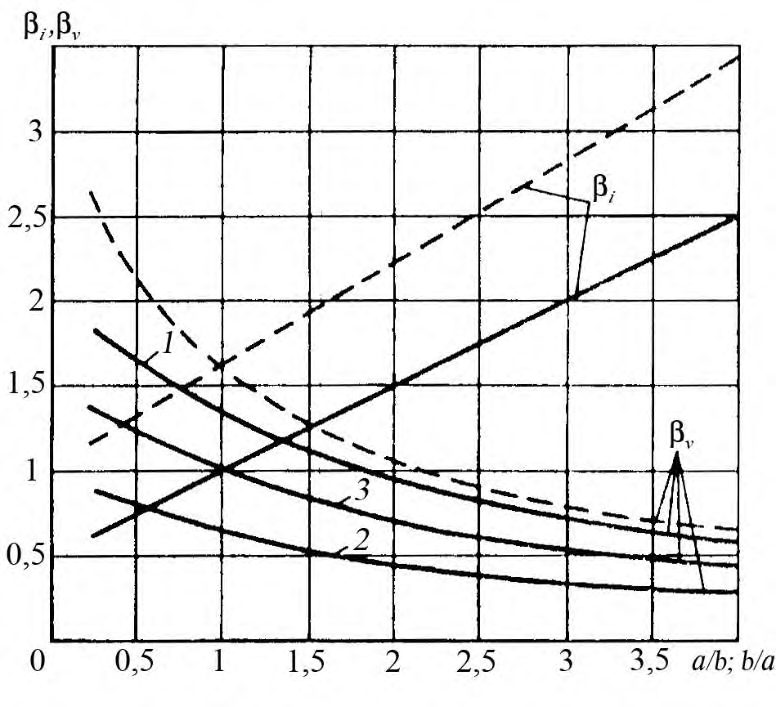
Приложение E
Нагрузки от волн на обтекаемые преграды и сквозные сооружения
Нагрузки от волн на вертикальную обтекаемую преграду
Е.1 Максимальная сила воздействия волн max Q , кН, на вертикальную обтекаемую преграду с поперечными размерами a ≤ 0,4λ и b ≤ 0,4λ (рисунок 8, а ) при глубине d > dcr определяется из ряда значений, получаемых при различных удалениях æ = x / вершины волны от преграды, по формуле
где ,max i Q и ,max v Q - соответственно инерционный и скоростной компоненты силы воздействия волн, кН, определяются по формулам:
δ i и δ v - коэффициенты сочетания инерционного и скоростного компонентов максимальной силы от воздействия волн, принимаемые соответственно по графикам 1 и 2 рисунка Е.1; h и λ - высота и длина расчетной волны; a - размер преграды по лучу волны, м; b размер преграды по фронту волны, м; kv коэффициент перехода от действительных значений скорости и ускорения волнового потока, воздействующего на преграду, к их средним значениям (таблице Е.1); α i и α v - инерционный и скоростной коэффициенты глубины, принимаемые соответственно по графикам а и б рисунка Е.2; β i и β v - инерционный и скоростной коэффициенты формы преграды с поперечным сечением в виде круга, эллипса и прямоугольника, принимаемые по графикам рисунка Е.3.
Примечания
1 Расчет сквозных сооружений или отдельно стоящих обтекаемых преград на нагрузки от волн должен производиться с учетом шероховатости их поверхности. При наличии данных испытаний по влиянию коррозии и морских обрастаний на сопротивление обтекаемых преград коэффициенты формы определяются по формулам:
где Ci и Cv - уточненные опытные значения коэффициентов инерционного и скоростного сопротивлений.
2 При подходе волн под углом к обтекаемой преграде (в виде эллипса или прямоугольника) коэффициенты формы определяются интерполяцией между их значениями по главным осям.
- 3 Максимальная сила воздействия волн max Q , кН, на вертикальную обтекаемую преграду при значении ,max ,max 2 i v Q Q принимается max ,max i Q Q = , а при значении ,max ,max 0, 2 i v Q Q -max ,max v Q Q = . В других случаях max Q следует определять из ряда значений, полученных по формуле (Е.1) при различных æ.
Таблица Е.1
| Относительный размер преграды a /λ, b /λ, D /λ | 00,05 | 00,1 | 00,15 | 00,2 | 00,25 | 00,3 | 00,4 |
|---|---|---|---|---|---|---|---|
| Коэффициент k v | 11 | 00,97 | 00,93 | 00,86 | 00,79 | 00,7 | 00,52 |
Рисунок Е.1 - Графики значений коэффициентов сочетания инерционного δ i (графики 1) и скоростного δ v (графики 2) компонентов силы от воздействия волн
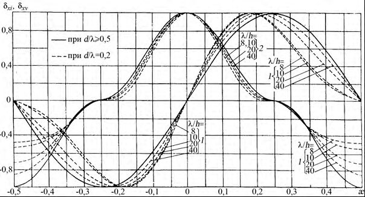
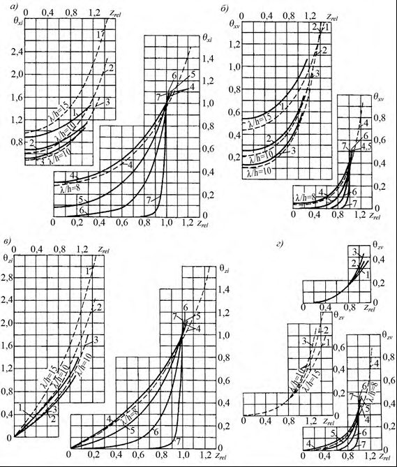
Рисунок Е.2 Графики значений инерционного α i и скоростного α v коэффициентов глубины
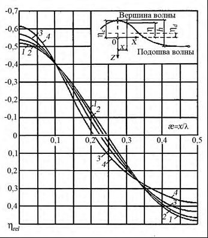
Рисунок Е.3 Графики значений инерционного β i и скоростного β v коэффициентов формы в зависимости от a / b (для Q , q и Px ) или b / a (для Pz )
Е.2 Нагрузку от волн q , кН/м, на вертикальную обтекаемую преграду на глубине z , м, при максимальной силе от воздействия волн max Q (рисунок 8, а ) следует определять по формуле
где qi ,max и qv ,max - инерционный и скоростной компоненты максимальной нагрузки от волн, кН/м, определяемые по формулам:
δ xi и δ xv - коэффициенты сочетания инерционного и скоростного компонентов нагрузки от волн, принимаемые соответственно по графикам 1 и 2 рисунка Е.4 при значении æ согласно Е.1; θ xi и θ xv - коэффициенты компонентов волновой нагрузки, принимаемые по графикам а и б рисунка Е.5 при значениях относительной глубины rel d z z -= . d
Рисунок Е.4 Графики значений коэффициентов сочетания инерционного δ xi (графики 1 ) и скоростного δ xv (графики 2 ) компонентов горизонтальной нагрузки от волн
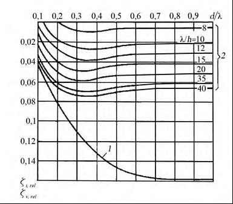
Рисунок Е.5 Графики коэффициентов нагрузки от волн θ xi , θ xv , θ zi , θ zv , при d / λ:1) 0,1; 2) 0,15; 3) 0,2; 4) 0,3; 5) 0,5; 6) 1; 7) 5; λ/ h = 40 - сплошные линии; λ/ h = 8-15 - штриховые линии
Е.3 Превышение взволнованной поверхности , м, над расчетным уровнем должно определяться по формуле
где rel - относительное превышение взволнованной поверхности, определяемое по рисунку Е.6.
Превышение средней волновой линии над расчетным уровнем d , м, следует определять по формуле
где , c rel - относительное превышение вершины волны, определяемое по рисунку Е.6, при значении æ =0.
1 - при d /λ = 0,5 и λ/ d =40; 2 - при d /λ = 0,5 и λ/ d = 20, а также при d /λ = 0,2и λ/ d = 40; 3 - при d /λ = 0,5 и λ/ d =10, а также при d /λ = 0,2 и λ/ d = 20; 4 при d /λ = 0,2 и λ/ d = 10
Рисунок Е.6 - Графики значений коэффициента rel
Е.4 Нагрузки от волн Q и q на вертикальную обтекаемую преграду при любом ее расположении x , м, относительно вершины волны определяются по формулам (Е.1) и (Е.6). При этом коэффициенты δ i и δ v должны приниматься по графикам 1 и 2 рисунка Е.1, а δ xi и δ xv - по графикам 1 и 2 рисунка Е.4 для данного значения æ = x / .
Е.5 Расстояние ,max Q z , м, от расчетного уровня воды до точки приложения максимальной силы от воздействия волн на вертикальную обтекаемую преграду max Q определяется по формуле
где δ i и δ v - коэффициенты, принимаемые по графикам 1 и 2 рисунка Е.1 при значении æ, соответствующем max Q ;
, Q i z и , Q v z - ординаты точек приложения соответственно инерционного и скоростного компонентов сил, м, определяемые по формулам:
где ζ i , rel и ζ v , rel - относительные ординаты точек приложения инерционного и скоростного компонентов сил, принимаемые по графикам рисунка Е.7; μ i и μ v - инерционный и скоростной коэффициенты фазы, принимаемые по графикам рисунка Е.8.
Расстояние z Q от расчетного уровня воды до точки приложения силы Q при любом удалении x вершины волны от преграды следует определять по формуле (Е.11), при этом коэффициенты δ i и δ v должны приниматься согласно графикам 1 и 2 рисунка Е.1 для заданного значения æ = x / .
- ζ i
, rel
;
- ζ v
, rel
Рисунок Е.7 Графики значений относительных ординат
Рисунок Е.8 Графики значений инерционного μ i и скоростного μ v коэффициентов фазы
Е.6 Максимальная сила воздействия разбивающихся (разрушающихся) волн ,max cr Q , кН, на вертикальную цилиндрическую преграду диаметром D ≤ 0,4 dcr принимается по результатам определения силы волнового воздействия cr Q , кН, при различном удалении вершины волны от преграды (рисунок Е.9, а ). Рекомендуется выполнять последовательное рассмотрение случаев с интервалом 0,1 t x d , начиная с
0 t x d = (где x - удаление, м, вершины разбивающейся волны от оси вертикальной цилиндрической преграды).
Сила воздействия волн cr Q , кН, для любого положения цилиндрической преграды относительно вершины волны должна определяться по формуле
где , i cr Q и , v cr Q - инерционный и скоростной компоненты силы от воздействия разбивающихся волн, кН:
где dt - глубина воды под подошвой волны, м, (рисунок Е.9, а ):
h sur - высота (трансформированной) волны, м, при обрушении в мелководной зоне с соблюдением условия hsur ≤ 0,8 dt ;
, c sur - превышение, м, над расчетным уровнем воды вершины волны при первом обрушении; δ i , cr и δ v , cr - инерционный и скоростной коэффициенты, принимаемые по графикам рисунка Е.9, б .
Е.7 Нагрузку от разбивающихся волн qcr , кН/м, на вертикальную цилиндрическую преграду на глубине z , м, от расчетного уровня (рисунок Е.9, а ) при относительном удалении оси преграды от вершины волны x / dt необходимо определять по формуле
где qi , cr и qv , cr - инерционный и скоростной компоненты нагрузки от разбивающихся волн на вертикальную преграду, кН/м:
где Є i , cr и Є v , cr - инерционный и скоростной коэффициенты, принимаемые соответственно по графикам а и б рисунка Е.10 при значениях относительной глубины cr rel t d z z d -= .
Примечание - Коэффициенты δ i , cr (рисунок Е.9, б ) и Є i , cr (рисунок Е.10, а ) следует принимать положительными при x / dt > 0 и отрицательными при x / dt < 0.
Рисунок Е.9 Схема к определению нагрузок от разбивающихся волн и графики значений коэффициентов δ i , cr - кривая 1 и δ v , cr - кривая 2
Рисунок Е.10 Графики значений инерционного Є i , cr и скоростного Є v , cr коэффициентов
Е.8 Максимальный опрокидывающий момент Mz , por , кН∙м, от волнового давления на сплошное днище вертикальной круглоцилиндрической преграды, расположенной на гравийно-галечниковом или каменнонабросном основании, относительно центра днища следует определять по формуле
где β por - коэффициент опрокидывающего момента с учетом проницаемости основания, принимаемый по таблице Е.2.
Таблица Е. 2
| D /λ | 0,2 | 0,25 | 0,3 | 0,4 |
|---|---|---|---|---|
| β por | 0,88 | 1,05 | 1,10 | 1,08 |
Полный максимальный опрокидывающий момент, действующий на преграду, определяется как сумма момента от максимальной силы max Q , равного произведению этой силы, определяемой по Е.1, на плечо, определяемое по E.5, и максимального момента Mz , por по формуле (Е.21), совпадающего по фазе с максимальной силой max Q .
Е.9 Волновое давление p , кПа, в точке поверхности вертикальной круглоцилиндрической преграды на глубине z ≥ 0 в момент максимума горизонтальной силы max Q определяется по формуле
где χ - коэффициент распределения давления, принимаемый по таблице Е.3.
Давление p в точках, лежащих выше расчетного уровня воды ( z ≥ 0), принимается: при > 0 по линейному закону между p на уровне z = 0, определяемом по формуле (Е.22), и p = 0 на уровне z = - h ; при < 0 для точек на глубине 0 ≤ z ≤ - h по линейному закону между p = 0 при z = 0 и значением p , определяемым по формуле (Е.22) при z = - h .
Таблица Е.3
| θ | Значение коэффициента при D /λ | Значение коэффициента при D /λ | Значение коэффициента при D /λ |
|---|---|---|---|
| θ | 0,2 | 0,3 | 0,4 |
| 0 ○ | 0,73 | 0,85 | 0,86 |
| 15 ○ | 0,7 | 0,83 | 0,85 |
| 30 ○ | 0,68 | 0,81 | 0,84 |
| 45 ○ | 0,6 | 0,74 | 0,8 |
| 60 ○ | 0,5 | 0,65 | 0,7 |
| 75 ○ | 0,35 | 0,51 | 0,55 |
| 90 ○ | 0,22 | 0,34 | 0,34 |
| 105 ○ | 0,03 | 0,11 | 0,1 |
| 120 ○ | -0,09 | -0,08 | -0,1 |
| 135 ○ | -0,23 | -0,23 | -0,23 |
| 150 ○ | -0,32 | -0,36 | -0,33 |
| 165 ○ | -0,37 | -0,42 | -0,38 |
| 180 ○ | -0,41 | -0,45 | -0,4 |
Обзначение: «θ» - угол между лучом набегающей волны и направлением на рассматриваемую точку из центра преграды (для передней образующей цилиндра θ = 0°).
Е.10 Максимальную донную скорость Vb ,max, м/с, в точках, расположенных на контуре преграды (θ = 90° и 270°) и впереди преграды на расстоянии 0,25λ от контура преграды (θ = 0°), следует определять по формуле
где коэффициент φ v принимается по таблице Е.4.
Таблица Е.4
| Положение расчетных точек | Значения коэффициента φ v при D /λ | Значения коэффициента φ v при D /λ | Значения коэффициента φ v при D /λ |
|---|---|---|---|
| Положение расчетных точек | 0,2 | 0,3 | 0,4 |
| На контуре преграды | 0,98 | 0,87 | 0,77 |
| Впереди преграды | 0,67 | 0,75 | 0,75 |
Нагрузки от волн на горизонтальную обтекаемую преграду
Е.11 Максимальное значение равнодействующей нагрузки от волн P max, кН/м, на горизонтальную обтекаемую преграду (рисунок 8, б ) с поперечными размерами a ≤ 0,1λ, м, и b ≤ 0,1λ, м, при zc ≤ b , но ( zc-b /2 ) > h /2 и при ( d-zc ) ≥ b должно определяться по формуле
для двух случаев:
- с максимальной горизонтальной составляющей нагрузки Px ,max, кН/м, при соответствующем значении вертикальной составляющей нагрузки Pz , кН/м;
- с максимальной вертикальной составляющей нагрузки Pz ,max, кН/м, при соответствующем значении горизонтальной составляющей линейной Px , кН/м.
Расстояния x , м, от вершины волны до центра преграды при действии максимальных нагрузок Px ,max и Pz ,max должны определяться по значениям относительной величины æ= x / , принимаемым согласно рисункам Е.4 и Е.11.
Рисунок Е.11 Графики значений коэффициентов сочетания инерционного δ zi (графики 1 ) и скоростного δ zv (графики 2 ) компонентов вертикальной нагрузки от волн
- Е.12 Максимальное значение горизонтальной составляющей нагрузки от волн Px ,max, кН/м, на горизонтальную обтекаемую преграду определяется из ряда величин, получаемых при различных значениях æ, по формуле
где Pxi и Pxv - инерционный и скоростной компоненты горизонтальной составляющей нагрузки от волн, кН/м, определяемые по формулам:
δxi и δ xv - коэффициенты сочетания инерционного и скоростного компонентов нагрузки от волн, принимаемые соответственно по графикам 1 и 2 рисунка Е.4 при значении æ согласно Е.1; θ xi и θ xv - см. в Е.2; β i и β v - инерционный и скоростной коэффициенты формы преграды с поперечным сечением в виде круга, эллипса и прямоугольника, принимаемые по графикам рисунка Е.3 при значениях a / b - для горизонтальной и b / a - для вертикальной составляющих нагрузки.
Е.13 Максимальное значение вертикальной составляющей нагрузки от волн на горизонтальную обтекаемую преграду Pz ,max, кН/м, следует определять из ряда величин, получаемых при разных значениях æ по формуле
где Pzi и Pzv - инерционный и скоростной компоненты вертикальной составляющей нагрузки от волн, кН/м, определяемые по формулам:
δ zi и δ zv - инерционный и скоростной коэффициенты сочетания, принимаемые по графикам 1 и 2 рисунка Е.11. θ zi и θ zv - коэффициенты компонентов волновой нагрузки, принимаемые соответственно по графикам в и г рисунка Е.5 при значениях относительной
β i и β v - см. в Е.12.
Е.14 Значение горизонтальной Px , кН/м, или вертикальной Pz , кН/м, составляющей нагрузки от волн на горизонтальную обтекаемую преграду при любом ее расположении x относительно вершины волны следует определять соответственно по формулам (Е.25) или (Е.28). При этом коэффициенты сочетания δ xi , δ xv или δ zi , δ zv должны приниматься по графикам рисунков Е.4 и Е.11 для конкретного значения æ = x / .
Е.15 Максимальное значение равнодействующей нагрузки от волн P max, кН/м, на лежащую на дне цилиндрическую преграду (рисунок 8, б ), диаметр которой D ≤ 0,1λ и D ≤ 0,1 d должно определяться по формуле (Е.24) для двух случаев, указанных в Е.11.
Е.16 Максимальную горизонтальную Px , max , кН/м, и соответствующую вертикальную Pz , кН/м, проекции нагрузки от волн, действующих на лежащую на дне цилиндрическую преграду, необходимо определять по формулам:
где Pxi и Pxv - соответственно инерционный и скоростной компоненты горизонтальной составляющей нагрузки от волн, кН/м, определяемые по формулам:
СП 38.13330.2018
δ xi , δ xv , и θ xi , θ xv , - см. в Е.12.
Максимальную вертикальную Pz ,max, кН/м, и соответствующую горизонтальную Px , кН/м, проекции нагрузки от волн следует принимать равными
Нагрузки от волн на сквозное сооружение из обтекаемых элементов
Е.17 Нагрузку от волн на сквозное сооружение в виде стержневой системы следует получать суммированием нагрузок, определенных согласно Е.1 - Е.14 как для отдельно стоящих преград с учетом положения каждого элемента относительно профиля расчетной волны. Элементы сооружения должны приниматься как отдельно стоящие обтекаемые преграды при расстояниях между их осями l ≥ 3 D ; при l< 3 D (где D - наибольший диаметр элемента) волновую нагрузку, полученную на отдельно стоящий элемент сооружения, необходимо умножать на коэффициенты сближения по фронту ψ t и лучу ψ l волн, принимаемые по таблице Е.5.
Таблица Е.5
| Относительное расстояние между осями преград l / D | Коэффициенты сближения Ψ t и Ψ l при значениях относительных диаметров D /λ | Коэффициенты сближения Ψ t и Ψ l при значениях относительных диаметров D /λ | Коэффициенты сближения Ψ t и Ψ l при значениях относительных диаметров D /λ | Коэффициенты сближения Ψ t и Ψ l при значениях относительных диаметров D /λ |
|---|---|---|---|---|
| Относительное расстояние между осями преград l / D | Ψ t | Ψ t | Ψ l | Ψ l |
| Относительное расстояние между осями преград l / D | 0,1 | 0,05 | 0,1 | 0,05 |
| 3 | 1 | 1 | 1 | 1 |
| 2,5 | 1 | 1,05 | 1 | 0,98 |
| 2 | 1,04 | 1,15 | 0,97 | 0,92 |
| 1,5 | 1,2 | 1,4 | 0,87 | 0,8 |
| 1,25 | 1,4 | 0,65 | 0,72 | 0,68 |
Е.18 Нагрузки от волн на наклонный элемент сквозного сооружения необходимо получать по эпюрам горизонтальной и вертикальной составляющих нагрузок, ординаты которых должны определяться согласно Е.14 с учетом заглубления под расчетный уровень и удаления от вершины расчетной волны отдельных участков элемента.
Примечание - Нагрузки от волн на элементы сооружения, наклоненные к горизонтали или вертикали под углом менее 25°, определяются соответственно по Е.4 и Е.14 как на вертикальную или горизонтальную обтекаемую преграду.
Е.19 Нагрузку от воздействия нерегулярных ветровых волн на сквозное сооружение из обтекаемых элементов следует определять умножением значения статической нагрузки, полученного согласно Е.17 и Е.18 от волн с высотой заданной обеспеченности в системе и средней длиной, на коэффициент динамичности kd , принимаемый по таблице Е.6.
При отношениях периодов / 0,3 c T T необходимо выполнять динамический расчет сооружения.
Таблица Е.6
| Отношение периодов / c T T | 0,01 | 0,1 | 0,2 | 0,3 |
|---|---|---|---|---|
| Коэффициент динамичности k d | 1 | 1,15 | 1,2 | 1,3 |
| Обозначения: « c T » - период собственных колебаний сооружения, с; « T » - средний период волны, с. | Обозначения: « c T » - период собственных колебаний сооружения, с; « T » - средний период волны, с. | Обозначения: « c T » - период собственных колебаний сооружения, с; « T » - средний период волны, с. | Обозначения: « c T » - период собственных колебаний сооружения, с; « T » - средний период волны, с. | Обозначения: « c T » - период собственных колебаний сооружения, с; « T » - средний период волны, с. |
ЖПриложение Ж. Построение эпюр давления от судовых волн
Для построения эпюр давления на крепление берегов от судовых волн применяются значения локального давления в характерных точках, приведенные в таблице Ж.1.
В таблице Ж.1 приняты следующие обозначения:
- h sh - высота судовой волны, м;
- h rsh - высота наката судовой волны на откос, м;
- d inf - глубина низа крепления откоса, м;
- d sh - глубина воды, м;
- dh - глубина забивки шпунта;
- zf - понижение уровня воды, м, за креплением откоса вследствие фильтрации; принимается равным:
- 0,25 hsh - для крепления протяженностью по откосу от расчетного уровня воды менее 4 м с водонепроницаемым упором;
- 0,2 hsh - то же, с протяженностью более 4 м с упором в виде каменной призмы;
- 0,1 hsh - для вертикальной шпунтовой стенки.
ИПриложение И. Учет экранирования при воздействии на суда ветровых нагрузок
Наличие экранирующих преград с наветренной стороны пришвартованного судна, которое может привести к существенному уменьшению нагрузок от воздействия ветра на судно, учитывается путем уменьшения площади парусности пришвартованного судна на приведенное значение экранирующей площади Ae , м² , определяемой в соответствии с рисунком И.1 по формуле
где He - среднее значение высоты экранирующих препятствий, м;
L - длина причала; h k - возвышение кордона причала над наивысшим уровнем воды, м; α e - коэффициент, учитывающий степень экранирующего действия преграды, определяемый по выражению
где Le - длина или сумма длин экранирующих преград l e - среднее расстояние экранирующих препятствий от кордона; при l e < He принимают l e = He , м; ah - наибольший размер надводного силуэта плавучего объекта
,
s - длина плавучего объекта по ватерлинии, м.
Рисунок И.1 Схема ветрового экранирования судна
КПриложение К. Коэффициенты сопротивления от воздействия течения на плавучие объекты
К.1 Коэффициент сопротивления продольной нагрузки от течения Cl , определяемый как сумма коэффициента сопротивления формы корпуса судна, коэффициента сопротивления, обусловленного трением воды по смоченной поверхности судна, и коэффициента сопротивления винто-рулевой группы судна, определяется по формуле
где Ct - коэффициент сопротивления трения, вычисляемый по формуле
Re - число Рейнольдса, определяемое по формуле
Vl - продольная составляющая скорости течения, м/с;
L s - длина плавучего объекта по ватерлинии, м; ν - кинематический коэффициент вязкости воды, принимаемый равным ν =1,0·10 -6 , м² /с; δ - коэффициент общей полноты судна;
Bs , Ts - ширина и осадка судна при рассматриваемой загрузке, м;
AR - величина, характеризующая площадь парусности винто-рулевой группы судна, принимаемая по таблице К.1 в зависимости от типа судна.
Таблица К.1
| Тип судна | A R |
|---|---|
| Грузовые | 240 |
| Танкеры | 270 |
К.2 Коэффициент сопротивления поперечной нагрузки от течения рекомендуется вычислять по формуле
где n C - коэффициент сопротивления при отношении глубины воды к осадке судна / s d T = ;
1 n C - коэффициент сопротивления при отношении глубины воды к осадке судна / 1 s d T = ; d - глубина, м; k 1 - числовой коэффициент; для большинства типов кораблей принимается k 1=2. Коэффициент сопротивления n C рекомендуется определять по формуле
где Ap - фактическая подводная лобовая площадь парусности судна, м² ; W - объем погруженной части корпуса судна (объемное водоизмещение), м³ ;
Минимальное значение коэффициента n C должно приниматься не менее 0,4 n C = .
Коэффициент сопротивления 1 n C принимается по таблице К.2 в зависимости от значения / s s L T , где δ - коэффициент общей полноты судна, / p s s A B T = -коэффициент полноты мидель-шпангоута судна. Для промежуточных значений / s s L T значения таблицы К.2 допускается интерполировать и экстраполировать. Минимальное значение коэффициента 1 n C должно приниматься не менее 1 2,0 n C = .
Таблица К.2
| / s L Ts | 1 n C |
|---|---|
| 20 | 2,00 |
| 40 | 2,84 |
| 60 | 3,64 |
| 80 | 4,50 |
| 100 | 5,44 |
ЛПриложение Л. Расчет нагрузки от навала пришвартованного судна на причальное сооружение при волнении
Л.1 Деформация отбойных устройств (и причального сооружения) z , м, возникающая при навале пришвартованного судна на причал под действием волн, определяется по формуле
где A - среднее значение амплитуды поперечно-горизонтальных колебаний точки контакта борта судна с отбойными устройствами, м, определяемое по формуле
определяется
где 0 - смещение центра поперечно-горизонтальных колебаний, м; по графику рисунка Л.1 в зависимости от значений параметров и P ,
km - коэффициент присоединенной массы воды при качке судна, определяемый по таблице Л.1; νc - коэффициент демпфирования подводной частью причального сооружения, принимаемый в зависимости от конструкции причального сооружения по таблице Л.2; νд=1 - для случая качки судна; l φ, l θ - абсцисса и ордината точки приложения нагрузки от навала судна относительно его центра тяжести, отсчитываемые по продольной и вертикальной главным осям соответственно, м; ρφ, ρθ - радиусы инерции судна относительно вертикальной и горизонтальной главных центральных осей, м;
2 = - средняя частота, c -1 , воздействующих на судно волн, где - средний в системе период волн, с;
- приведенная частота поперечно-горизонтальных колебаний судна на 0 С n W =
- отбойных устройствах, c -1 , где C 0 - коэффициент жесткости отбойного устройства, определяемый для начального, линейного, участка характеристики «сила-деформация», Н/м;
- n - число отбойных устройств, одновременно деформируемых при навале; для отбойных устройств с существенно нелинейными характеристиками (конических, арочных и т.п.) приведенная частота поперечногоризонтальных колебаний судна должна быть умножена на коэффициент 0,7;
- W - водоизмещение судна, м³ , при рассматриваемой нагрузке;
- ρ - плотность воды, кг/м³ ;
- μ и ε - параметры, определяемые по рисункам Л.2 и Л.3 соответственно;
- ψ - коэффициент, учитывающий нефронтальный подход волн к диаметральной плоскости судна, определяется по графику рисунка Л.4, где L пп длина судна между перпендикулярами, м; ψ - угол подхода волн, отсчитываемый от продольной оси судна;
- и θ - редукционные коэффициенты поперечно-горизонтальной и бортовой качки соответственно, определяются по графикам рисунка Л.5; k θ - коэффициент динамичности бортовой качки; определяется по графику рисунка Л.6, где ωθ=2π/τθ - собственная частота бортовой качки, c -1 , τθ - собственный ее период, с;
- и - соответственно средние в системе значения высот и длин волн, воздействующих на судно, м; h
- j - коэффициент перехода от средних значений к малообеспеченным для амплитуд поперечно-горизонтальных колебаний точки контакта борта судна с отбойными устройствами, распределенными по закону Релея; определяется по таблице Л.3, в расчетном случае следует рассматривать навал 1% - ной обеспеченности.
Нагрузка, передаваемая причальному сооружению через отбойные устройства, расположенные в средней части участка контакта судна с сооружением Lk , определяется в предположении навала судна лагом, когда все n отбойных устройств в пределах прямолинейной части борта деформируются равномерно.
Таблица Л.1
| Относительная осадка d s / d | Значениякоэффициента k m припараметре B σ 2 / g ,равном | Значениякоэффициента k m припараметре B σ 2 / g ,равном | Значениякоэффициента k m припараметре B σ 2 / g ,равном | Значениякоэффициента k m припараметре B σ 2 / g ,равном | Значениякоэффициента k m припараметре B σ 2 / g ,равном | Значениякоэффициента k m припараметре B σ 2 / g ,равном | Значениякоэффициента k m припараметре B σ 2 / g ,равном |
|---|---|---|---|---|---|---|---|
| Относительная осадка d s / d | 0,5 | 1,0 | 2,0 | 3,0 | 4,0 | 5,0 | 6,0 |
| 0,00 | 1,90 | 1,67 | 1,39 | 1,23 | 1,15 | 1,15 | 1,15 |
| 0,20 | 2,08 | 1,82 | 1,48 | 1,32 | 1,22 | 1,21 | 1,21 |
| 0,40 | 2,35 | 2,04 | 1,64 | 1,43 | 1,35 | 1,33 | 1,33 |
| 0,60 | 2,63 | 2,27 | 1,82 | 1,60 | 1,55 | 1,54 | 1,54 |
| 0,80 | 2,86 | 2,44 | 2,04 | 1,82 | 1,75 | 1,74 | 1,72 |
| 0,90 | 3,13 | 2,67 | 2,22 | 1,96 | 1,89 | 1,87 | 1,85 |
| 0,95 | 3,33 | 2,78 | 2,27 | 2,04 | 1,96 | 1,92 | 1,90 |
акватории у сооружения, м; средняя частота воздействующих на судно волн, 1/ c ; - средний в системе период волн, с. 2 =
Нагрузка, передаваемая причальному сооружению через отбойные устройства, расположенные на концах участка контакта, определяется в предположении неравномерного навала (под углом, при наличии рыскания), когда n = 1.
Сплошные линии - швартовы из синтетических и растительных материалов; пунктирные - стальные швартовы
Таблица Л.2
| Конструкциипричальных сооружений | Коэффициентν c демпфирования |
|---|---|
| Набережные из обыкновенных или фасонных массивов, массивов- гигантов, оболочек большого диаметра и набережные на свайных опорах с переднимшпунтом | 0,75 |
| Набережные эстакадного или мостового типа, набережные на свайных опорахсзаднимшпунтом | 0,85 |
| Пирсы эстакадного или мостового типа, палы причальные, в том числе головные илиразворотные | 1,0 |
Рисунок Л.4 График для определения значения редукционного коэффициента ψ
Таблица Л.3
| Обеспеченность,% | 1 | 3 | 5 | 10 | 20 | 50 |
|---|---|---|---|---|---|---|
| j | 2,42 | 2,11 | 1,95 | 1,71 | 1,43 | 0,94 |
1 - судно в полном грузу; 2 - в балласте; 3 - порожнее
Рисунок Л.5 График для определения значений редукционных коэффициентов и θ
1 - суда без килей; 2 - со скуловыми килями; 3 - со скуловыми килями и бортовыми гребными винтами
Рисунок Л.6 График для определения коэффициента динамичности бортовой качки судна k θ
Л.2 Нагрузка на отдельное отбойное устройство при качке пришвартованного судна на волнении (без учета ветра и течения) приближенно определяется как произведение коэффициента жесткости устройства на значение деформации отбойного устройства Δz , вычисленное по формуле (Л.1). Полная нагрузка на отбойное устройство в условиях воздействия ветра, течения и волн определяется как сумма нагрузок от ветра и течения (без учета волнения), вычисленных по 6.7, и от навала при качке пришвартованного судна на волнении. o C
Л.3 Ориентировочные значения усилий в швартовных канатах при качке пришвартованного судна на волнении (без учета ветра и течения) определяется аналогично нагрузкам от навала судна на причал. Удлинение швартовных канатов Δ z при качке судна на волнении определяется по формулам (Л.1) - (Л.5). Основные отличия в определении усилий в швартовах от определения нагрузок на отбойные устройства связаны с вычислением коэффициента по формуле (Л.5) и определением приведенной частоты поперечногоризонтальных колебаний судна исходя из жесткости швартовных канатов.
Л.4 Для определения волновой составляющей усилия в швартовах при вычислении коэффициента по формуле (Л.5) значения l φ и l θ принимаются равными абсциссе и ординате точки крепления наиболее нагруженных носовых и кормовых прижимных швартовных канатов судна относительно его центра массы. В первом приближении l φ принимается равным половине длины судна между перпендикулярами, а l θ - разности между высотой борта судна и возвышением его центра массы относительно основной плоскости. При определении приведенной частоты поперечно-горизонтальных колебаний судна коэффициент o C принимается равным линеаризованному коэффициенту жесткости швартовного каната судна m C , а число n - числу носовых и кормовых прижимных канатов судна.
Линеаризованный коэффициент жесткости швартовного каната приближенно определятся по формуле
где p N - разрывное усилие каната, H; k m , - числовые коэффициенты, принимаемые по таблице Л.4;
Δl max - допускаемое относительное удлинение каната, принимаемое по таблице Л.4.
Таблица Л.4
| Тип каната | Допускаемое относительное удлинение Δl max | k | m |
|---|---|---|---|
| Стальной | 0,010 | 22,5 | 1,0 |
| Капроновый | 0,252 | 1,5 | 1,46 |
| Нейлоновый | 0,226 | 2,3 | 1,64 |
| Териленовый | 0,156 | 4,2 | 1,64 |
| Полипропиленовый | 0,163 | 4,6 | 1,73 |
| Полиэтиленовый | 0,168 | 6,7 | 1,97 |
| Куралоновый | 0,122 | 3,4 | 1,35 |
| Манильский | 0,123 | 27,4 | 2,24 |
| Сизальский | 0,112 | 28,3 | 2,16 |
| Пеньковый | 0,111 | 32,0 | 2,21 |
Л.5 Максимальное усилие в швартовных канатах при качке судна на волнении определяется как произведение удлинения каната, вычисленного по формуле (Л.1) на линеаризованный коэффициент жесткости каната m C , а полное максимальное усилие в швартовных канатах принимается равным сумме усилий от ветра, течения, определенных по 6.12, и волн. Полная волновая составляющая швартовного усилия на швартовный пал причала принимается равной произведению волновой составляющей усилия в канате и числа канатов, заведенных на пал.
МПриложение М. Определение энергии навала судна при подходе к причальному сооружению
М.1 При определении кинетической энергии En , кДж, навала судна на причальное сооружение (рисунок М.1) по формуле (40) нормальная составляющая скорости подхода судна Vn , м/с, принимается по таблице М.1.
Рисунок М.1 Схема контакта судна с причалом
Таблица М.1
| Условия швартовки | Допускаемая нормальная составляющая скорости подхода судна, V n , м/с, с расчетным водоизмещением W , тыс.т | Допускаемая нормальная составляющая скорости подхода судна, V n , м/с, с расчетным водоизмещением W , тыс.т | Допускаемая нормальная составляющая скорости подхода судна, V n , м/с, с расчетным водоизмещением W , тыс.т | Допускаемая нормальная составляющая скорости подхода судна, V n , м/с, с расчетным водоизмещением W , тыс.т | Допускаемая нормальная составляющая скорости подхода судна, V n , м/с, с расчетным водоизмещением W , тыс.т | Допускаемая нормальная составляющая скорости подхода судна, V n , м/с, с расчетным водоизмещением W , тыс.т | Допускаемая нормальная составляющая скорости подхода судна, V n , м/с, с расчетным водоизмещением W , тыс.т | Допускаемая нормальная составляющая скорости подхода судна, V n , м/с, с расчетным водоизмещением W , тыс.т | Допускаемая нормальная составляющая скорости подхода судна, V n , м/с, с расчетным водоизмещением W , тыс.т | Допускаемая нормальная составляющая скорости подхода судна, V n , м/с, с расчетным водоизмещением W , тыс.т | Допускаемая нормальная составляющая скорости подхода судна, V n , м/с, с расчетным водоизмещением W , тыс.т | Допускаемая нормальная составляющая скорости подхода судна, V n , м/с, с расчетным водоизмещением W , тыс.т | Допускаемая нормальная составляющая скорости подхода судна, V n , м/с, с расчетным водоизмещением W , тыс.т | Допускаемая нормальная составляющая скорости подхода судна, V n , м/с, с расчетным водоизмещением W , тыс.т |
|---|---|---|---|---|---|---|---|---|---|---|---|---|---|---|
| Условия швартовки | До 1 | 2 | 3 | 4 | 5 | 10 | 20 | 30 | 40 | 50 | 100 | 200 | 300 | 400 и более |
| Сложные Средние | 0,87 0,67 | 0,73 0,58 | 0,65 0,52 | 0,60 0,49 | 0,56 0,46 | 0,45 0,38 | 0,36 0,30 | 0,31 0,26 | 0,28 0,24 | 0,26 0,22 | 0,20 0,17 | 0,16 0,13 | 0,14 0,11 | 0,12 0,10 |
| 0,35 | 0,08 | 0,08 | ||||||||||||
| Простые | 0,52 | 0,45 | 0,40 | 0,37 | 0,29 | 0,23 | 0,20 | 0,18 | 0,16 | 0,13 | 0,10 | 0,08 | 0,08 | |
| Средние | 0,34 | 0,30 | 0,27 | 0,25 | 0,24 | 0,19 | 0,15 | 0,13 | 0,12 | 0,11 | 0,08 | 0,08 | ||
| Простые | 0,18 | 0,15 | 0,14 | 0,13 | 0,12 | 0,09 | 0,08 | 0,08 | 0,08 | 0,08 | 0,08 | 0,08 | 0,08 | |
| р и м е ч | чаще всего | 0,08 | расчетах, | |||||||||||
| Простые | а н и е условия | - | Условия, учитываются | при | используемые швартовке | в | высокоманевренных | выделены | судов | жирным с |
Примечание - Условия, чаще всего используемые в расчетах, выделены жирным шрифтом. Простые условия учитываются при швартовке высокоманевренных судов с подруливающими устройствами и оборудованием причала системами контроля швартовки.
Особый случай -ввод судна в шлюз (док). Взаимодействие судна с направляющими отбойниками (рисунок М.2) должно определяться продольной составляющей скорости Vl=V sinα.
Рисунок М.2 - Схема контакта судна с направляющими отбойниками при входе в шлюз (док)
М.2 Определение коэффициента ψ, учитывающего условия швартовки и конструкции причальных сооружений выполняется по формуле
где cm - коэффициент присоединенной массы; c e - коэффициент эксцентриситета, учитывающий диссипацию энергии при повороте относительно точки соприкосновения с отбойником; c c - коэффициент сквозности причала, учитывающий амортизирующие свойства слоя воды между корпусом причалившего судна и причала; c s - коэффициент жесткости, учитывающий поглощение части энергии навала за счет упругой деформации отбойных устройств.
М.3Определение коэффициента cm присоединенной массы
При подходе судна к причалу бортом (лагом) (рисунок М.3, а ) в зависимости от соотношения осадки судна ds , м, и глубины воды d , м, следует принимать
При подходе судна к причалу кормой или носом (рисунок М.3, б ) cm =1,1.
М.4Определение коэффициента ce эксцентриситета
Коэффициент ce определяется в предположении, что центр массы судна находится в его средней точке по длине (рисунок М.1) по формуле
где R - расстояние, м, от центра массы судна до точки его соприкосновения с отбойником, определяемая по формуле
K - радиус, м, кругового движения судна в акватории перед причаливанием, определяется по формуле
- коэффициент полноты водоизмещения судна, определяется по формуле
φ - угол, град, между направлением действия скорости V и линией R (рисунок М.1); при φ < 10° принимается ce =1,0;
W водоизмещение, т;
Ls - полная длина судна, м;
B - ширина судна, м; y - расстояние, м, по продольной оси судна от его центра тяжести до точки максимальной кривизны борта в плане (рисунок М.1); ρ - плотность воды, т/м³ .
В первом приближении значения коэффициента ce при причаливании для трех распространенных случаев швартовки принимается равными: на четверть длины æ L =
$$/ 4 s 0,4 0,6 e c - ; / 3 s 0,6 0,8 e c - ; / 2 s 1,0 e c .$$ на треть длины æ L = в средней точке æ L = а - подход бортом (лагом); б - подход кормой или носом
Рисунок М.3 Схемы подхода судна к причалу
М.5 Значение коэффициента c c сквозности причала (рисунок М.4) принимается c c = 1,0 в случаях: отдельно стоящих причальных устоев; сквозных конструкций причала; при угле причаливания α > 5°. Значение коэффициента cc = 0,9 принимается в случаях: сплошной конструкции причала; при угле причаливания α < 5°.
а
- сплошная конструкция; б - сквозная конструкция
Рисунок М.4 Типы конструкции причала
М.6Определение коэффициента жесткости cs
Для отбойников, выполненных из малодеформируемых материалов (бетон, дерево, полиэтилен (в виде брусьев), резина толщиной менее 150 мм), следует принимать коэффициент жесткости cs = 0,9.
При применении мягких резиновых (как правило, полых) отбойников (при толщине более 150 мм) cs =1,0.
М.7 Энергия EA , кДж, которую должен погасить отбойник, с учетом случайных столкновений, ошибок персонала, неисправностей, комбинации этих факторов определяется по формуле
где γ s - коэффициент безопасности, принимаемый по таблице М.2.
При наличии на причальном сооружении системы контроля за перемещениями судна и его скоростью коэффициент γ s принимается равном 1,0.
Таблица М.2
| Тип судна | γ s |
|---|---|
| Танкеры, сухогрузы, грузовые суда водоизмещением менее 20 тыс. т | 1,75 |
| более 150 тыс. т | 1,25 |
| Контейнеровозы водоизмещением менее 50 тыс. т | 2,0 |
| более 150 тыс. т | 1,5 |
| Суда с горизонтальным способом погрузки, паромы | 2,0 |
| Буксиры, рабочие суда и т.п | 2,0 |
где
НПриложение Н. Определение усилий в швартовных канатах
Н.1 Формулы, приведенные в настоящем приложении, применяются при определении усилий в отдельных швартовных канатах с учетом фактической схемы швартовки судна, углов наклона и длин отдельных канатов.
Н.2 Определение усилий Ni , кН, в отдельных швартовных канатах на тумбы причала, при которых стоянка будет безопасной, вычисляются по формулам: для носовой и кормовой групп прижимных швартовных канатов
для продольных швартовных канатов и шпрингов
l i - длина швартовного конца, в котором действует усилие Ni , м; l j - длины швартовных концов в группе, м ( j =1, 2, …, nr ); nr число швартовных концов в группе; α i - угол между проекцией швартова на горизонтальную плоскость и линией кордона причала (рисунок 17), град; β i - угол между линией действия силы Ni и ее проекцией на горизонтальную плоскость, град; tot Q , Ntot - соответственно поперечная и продольная составляющие, кН, от действия ветра и течения, определяемые по 6.4 и 6.5 с учетом экранирующего действия сооружений для различных значений скорости ветра Vw , м/с.
ППриложение П. Испытание льда на одноосное сжатие
Отбор, изготовление и подготовка образцов к испытанию
Образцы льда отбираются из N слоев ледяного поля так, чтобы их длинные оси были перпендикулярны к направлению роста кристаллов; при этом N 3.
Образцы льда изготавливаются в виде призм квадратного сечения или цилиндров круглого сечения с отношением высоты к ширине (диаметру), равным 2,5. Ширина образца должна не менее чем в 10 раз превышать средний поперечный размер кристалла, определяемый по данным кристаллографического исследования.
Отклонение размеров образцов от средних в серии не должно быть более 1 %. Поверхность образцов должна быть гладкой, ровной, без трещин, сколов, раковин, заусенцев и других дефектов.
Цилиндрические образцы следует изготовлять на токарном станке, а призматические - на горизонтально-фрезерном станке.
Грани призматических образцов рекомендуется обрабатывать попарно двумя фрезами, установленными на одном валу с расстоянием между ними, равным ширине образца при обработке боковых граней, и с расстоянием, равным высоте образца при обработке опорных граней.
Перед испытанием образцы исследуемого слоя выдерживаются не менее 1 ч при температуре слоя t i , определяемой по данным испытаний, а при их отсутствии - по расчетному распределению температуры внутри ледяного покрова.
Оборудование
Испытательные машины должны быть устроены по типу машин с управляемой скоростью деформации. Наибольшая создаваемая машиной нагрузка должна не менее чем в два раза превышать разрушающую нагрузку для испытываемых образцов.
Испытательные машины должны быть с автоматической записью кривой «нагрузка - деформация» и обеспечивать измерение нагрузки с погрешностью не более 5 %.
Проведение испытаний
Образцы сжимаются вдоль длинных осей. Образцы исследуемого слоя испытывают при температуре t i и постоянной скорости деформации, принимаемой для пресноводного льда равной 4 3 10 c - = , c -1 , а для морского льда - по таблице П.1.
Таблица П.1
| Температура льда в i -м слое t i , °С | -2 | -10 | -15 | -23 и ниже |
|---|---|---|---|---|
| Значение 4 3 10 c - = , c -1 | 0,5 | 1,5 | 2,0 | 3,0 |
Обработка результатов
Разрушающее напряжение (прочность на одноосное сжатие) для каждого образца Cj , МПа, вычисляется по формуле
где ( P max) j - разрушающая (пиковая) нагрузка для j -го образца, определяемая по диаграмме «нагрузка - деформация», МН; f
- площадь первоначального поперечного сечения образца, м² .
За результат испытания серии образцов исследуемого слоя принимается значение Ci i , где Ci - среднеарифметическое значение параллельных определений прочности льда на одноосное сжатие, МПа, вычисляемое по формуле
где n - число испытуемых образцов;
i - см. в 7.4.
Графически результат испытания серии образцов исследуемого слоя изображается точкой и двумя равными отрезками, отложенными вверх и вниз от этой точки; точка соответствует среднеарифметическому значению предела прочности льда, а отрезок - среднему квадратическому отклонению случайной погрешности измерений. Указание числа испытанных образцов обязательно.
Примеры графического представления результатов испытаний нескольких серий образцов показаны на рисунках П.1 и П.2.
Рисунок П.1 Зависимость прочности пресноводного льда на одноосное сжатие (при переходе от пластического разрушения к хрупко-пластическому) от температуры ( n = 5)
Размеры образцов (4 4 10) см
Рисунок П.2 Зависимость прочности морского льда на одноосное сжатие (при переходе от пластического разрушения к хрупко-пластическому) от количества жидкой фазы ( n =5)
На рисунке П.2 i - солёность рассола во льду, ‰, определяемая по формуле
где i s - солёность льда, ‰
РПриложение Р. Гряды торосов
Однолетние торосы состоят из паруса, консолидированного слоя и киля меньшей прочности. Киль состоит из частично затвердевших ледяных глыб или отдельных глыб с трением только между глыбами. Большая часть консолидированного слоя - пластины смерзшегося льда. Геометрические формы торосов варьируются. При расчётах может быть принято симметричное поперечное сечение тороса, как показано на рисунке Р.1.
1 - парус; 2 - консолидированный слой; 3 - киль; 4 - ровный лёд; k - угол киля; h u - высота паруса; h - заглубление киля; c h - толщина консолидированного слоя; - расстояние между нижней частью консолидированного слоя и килем
Рисунок Р.1 Геометрия однолетнего тороса
Для профиля тороса, показанного на рисунке Р.1, типичные соотношения даны как ( ) 1 8 2 0 c d h , , h = -, 4 5 k u h , h = и 26 30 k = - . Параметр ширины может варьироваться от 0 b = до 5 u b h = . Пористость киля паруса зависит от возраста ледового тороса и варьируется для различных морских областей. Толщина консолидированного слоя изменяется за время жизни тороса. Пористость киля может изменяться от 0,1 до 0,4.
Верхняя граница оценки для горизонтальной ледовой нагрузки от движущегося тороса, может быть получена из уравнения
где Fc - нагрузка от консолидированной части тороса, определяемая также как в 7.24; F k - нагрузки от киля тороса.
Для вертикальных конструкций нагрузка от киля тороса может быть определена по формуле
где μ - коэффициент внутреннего трения, определяется по формуле
k h φ k - угол внутреннего трения; k c - сцепление (с учётом зацепа) ледяного образования, МПа, определяемое по опытным данным; при их отсутствии принимается 0 02 0 03 k c , , = -МПа; k b - средняя ширина преграды по фронту в зоне действия ледяного образования, м; γ e - эффективная плавучесть, определяемая по формуле
СПриложение С. Основные буквенные обозначения
- Vw - скорость ветра, м/с;
- c - превышение вершины волны над расчетным уровнем, м;
- t - понижение подошвы волны от расчетного уровня, м;
- h - высота волны, м;
- λ - длина волны, м;
- 2 / k = - волновое число, 1/ м ;
- T - период волны, с;
- ω=2π/ T - круговая частота волны, 1/с;
- c - скорость волны, м/с;
- h /λ - крутизна волны;
- λ/ h - пологость волны;
- hi , λ i , Ti - соответственно высота, длина и период волн i%-ной обеспеченности в системе, м;
- h , , T - соответственно средние высота, длина и период волн, м;
- d - глубина воды при расчетном уровне, м;
- dcr - критическая глубина воды, при которой происходит первое обрушение волн, м;
- Dcr , u - глубина воды, при которой происходит последнее обрушение волн, м;
- Q - сила от воздействия волн на сооружение, преграду, кН;
- P - распределенная нагрузка на единицу длины сооружения, преграды, кН/м;
- p - волновое давление, кПа;
- ρ - плотность воды, кг/м³ ; т/м³ ;
- g - ускорение свободного падения, м/с 2 ;
- φ, β - угол наклона откоса (или дна) к горизонту, град;
- c R - предел прочности льда при сжатии, МПа;
- f R - предел прочности льда при изгибе, МПа;
- V - скорость движения ледяного поля, м/с;
- d h - обеспеченная толщина ровного льда, м.
Библиография
- [1] СП 11-103-97 «Инженерно-гидрометеорологические изыскания для строительства»
- [2] СП 11-114-2004 «Инженерные изыскания на континентальном шельфе для строительства морских нефтегазопромысловых сооружений»
- [3] СП 32-103-97 «Проектирование морских берегозащитных сооружений»